3.1 查看构件元数据
3.1 Reviewing Element Metadata
要查看 Metadata（元数据）面板，点击菜单项 *CI Tools >Metadata>Show MetadataP**alette…*
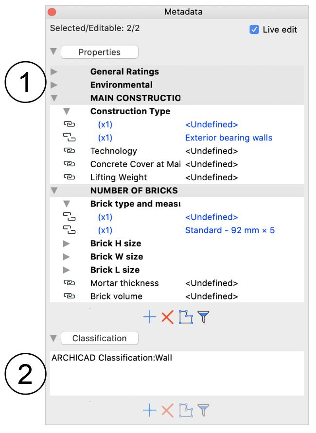
该面板的顶部结构与 ARCHICAD 的 Info（信息）面板相似，显示已选中和可编辑构件的数量。相邻的 Live Edit（实时编辑）复选框会显著改变面板的使用方式：
- 当 Live Edit 开启时，它的运作方式与 ARCHICAD 的 Info 面板非常相似：
内容会根据当前选择动态更新；
- 如果没有选中构件但有工具处于激活状态，则显示该激活工具的设置；
- 编辑会立即更新选中的构件或激活工具的设置；
- 如果既没有工具也没有构件被选中，它只显示 No selection（无选择）并且不做任何事。
Info 面板中没有的附加功能：
- 即使属性值是通过表达式计算的，也会显示出来；
- 可以同时查看和编辑多个构件的特征标记，并清楚地标识出整个选择集中属性值的差异；
- 当所选构件的子集具有相同的属性值时，可以只编辑该子集；
- 可以把构件选择集筛选为匹配指定特征标记的子集；
- 可以扩展构件选择集，以加入匹配指定特征标记的构件。
- 当 Live Edit 关闭时，该面板在管理或转移设置方面起被动作用。所显示的特征标记（包括属性值）是静态的，不随当前选择而变化，只会因明确操作而改变：
可以从选中构件中提取特征标记；
- 可以有选择地把特征标记注入构件；
- 特征标记可以自动应用到项目中新增的任何构件（无论类型）。
静态的特征标记列表支持一种与标准 ARCHICAD 吸管和注射器工具非常相似的工作流，但允许在构件之间细粒度地转移特定的特征标记和属性值。因此，如果（例如）某个构件包含应应用到许多其他构件上的属性值，你可以把这些值从该构件提取到面板中，选中其他构件，再把这些值注入进去。
面板的其余部分分为 2 个区域，每个都可以折叠：
- ARCHICAD 属性
- ARCHICAD 分类
这三个面板的运作方式大体相同，因此无需逐一详细说明。本节总结了面板的通用功能，并给出后续各节更详细说明的引用。构件的特征标记通过以下面板按钮进行管理：
| **Live Edit 开启** | **Live Edit 关闭** | ||
|---|---|---|---|

| 添加特征标记 | 仅在选中了构件或工具时可用。提示选择一个或多个特征标记，并立即将其添加到选中的构件或工具中。更多细节见第 3.2.1 节 | 提示选择一个或多个特征标记，并把它们添加到相应的面板列表中。选中的构件或工具不受影响。更多细节见第 3.2.7 节 |
|

| 移除特征标记 | 仅在相应面板列表中选中了特征标记时可用。立即从选中的构件或工具中移除所选特征标记。更多细节见第 3.2.2 节 | 仅在相应面板列表中选中了特征标记时可用。立即从相应面板列表中移除所选特征标记。选中的构件或工具不受影响 |
|
| 提取特征标记 | 在此上下文中不适用 | 仅在选中了构件或工具时可用。从选中的工具或构件中提取所有相关特征标记并显示在列表中。选中的构件或工具不受影响。更多细节见第 3.2.3 节和第 3.2.7 节 |
|

| 注入特征标记 | 在此上下文中不适用 | 仅在选中了构件或工具时可用。把列表中所有相关特征标记注入选中的工具或构件。如果列表中选中了某些项，则只注入这些项。更多细节见第 3.2.3 节和第 3.2.7 节 |
|

| 选择匹配项 | 当相应面板列表中至少选中一个特征标记时可用。立即选中当前视图中具有匹配特征标记的构件（并加入当前选择集）。更多细节见第 3.2.4 节 | 在此上下文中不适用 |
|

| 按特征标记筛选 | 当相应面板列表中至少选中一个特征标记时可用。立即筛选选中的构件，使只有具有匹配特征标记的构件保持选中。更多细节见第 3.2.5 节 | 在此上下文中不适用 |
请注意，所列出特征标记的文字样式在某些情况下会有所不同。所有条目通常以普通的黑色字体显示，但可能会出现以下替代样式，有时会组合出现：
| 蓝色 | 唯一特征标记 仅在选中多个构件时相关。当某个特征标记名称并非整个选择集所共有时，即选择集中至少有一个构件没有该特征标记，它会以蓝色显示。这同样适用于单个属性值——选中的构件可能共有该属性但取值不同。更多细节见第 3.3.3 节。 |
|---|---|
| **粗体** | 混合属性值 仅对属性相关。当一个属性存在于多个构件中且取值不同时，该属性名称会以粗体显示。点击展开三角即可查看各个属性值。由于它们并非整个选择集所共有，这些取值都会以蓝色显示。 |
| 绿色 | 自动注入的特征标记 仅在显示工具默认值时相关（工具已激活且未选中构件），并且属性或分类的自动注入处于激活状态。所选工具的特征标记会显示，但有一处不同：如果有特征标记被添加到静态列表中，它们将覆盖工具设置并以绿色显示。如果注入了分类，它所添加的任何属性也会以绿色显示。更多细节见第 3.2.7 节。 |
上图中可以看到一些文字样式的示例。这些样式是审核和编辑项目数据的宝贵资源，因为它们能突出差异和潜在问题——更多细节见第 3.2.6 节。
To view the Metadata palette, click the menu item *CI Tools >Metadata>Show MetadataP**alette…*
The palette is headed up in a similar way to ARCHICAD’s Info palette, showing the number of selected and editable elements. The adjacent Live Edit checkbox markedly changes how the palette is used:
- When Live Edit is on, it works in much the same was as ARCHICAD’s Info palette:
The contents update dynamically based on the current selection;
- If no elements are selected and a tool is active, the active tool settings are displayed;
- Editing immediately updates either the selected elements or the active tool settings;
- If no tool or element is selected, it simply displays No selection and does nothing.
Additional features not found in the Info palette:
- Property values are shown, even when calculated by expression;
- The traits of multiple elements can be viewed and edited simultaneously, clearly identifying the differences in property values across the whole selection;
- A subset of the selected elements can be edited when they share the same property value(s);
- The element selection can be filtered to a subset matching specified traits;
- The element selection can be extended to add elements matching specified traits.
- When Live Edit is off, the palette has a passive role in managing or transferring settings. The displayed traits (including property values) are static irrespective of the current selection, only changing in response to explicit actions:
Traits can be extracted from selected elements;
- Traits can be selectively injected into elements;
- Traits can be automatically applied to any element added to the project (irrespective of type).
The static list of traits support a workflow much like the standard ARCHICAD pipette and syringe tools, but allowing fine-grained transfer of specific traits and property values between elements. So if (for example) one element contains property values that should be applied to many others, you can extract those values from the element into the palette, select other elements and inject those values into them.
The remainder of the palette is divided into 2 sections, each of which can be collapsed:
- ARCHICAD properties
- ARCHICAD classifications
All three panels largely work in the same way, so detailed explanation of each is not required. Common palette features are summarised in this section with a reference to more detailed instructions in following sections. Element traits are managed with the following palette buttons:
| **Live Edit On** | **Live Edit Off** | ||
|---|---|---|---|
| Add a trait | Enabled only when an element or tool is selected. Prompts for one or more traits to be selected and immediately adds them to either the selected elements or tool. See section 3.2.1 for more detail | Prompts for one or more traits to be selected and adds them to the relevant palette list. Selected elements or tools are not affected. See section 3.2.7 for more detail |
|
| Remove a trait | Enabled only when a trait is selected in the relevant palette list. Immediately removes the selected traits from the selected elements or tool. See section 3.2.2 for more detail | Enabled only when a trait is selected in the relevant palette list. Immediately removes the selected traits from the relevant palette list. Selected elements or tools are not affected |
|
| Extract traits | n/a to this context | Enabled only when an element or tool is selected. Extracts all the relevant traits from the selected tool or elements and displays them in the list. Selected elements or tools are not affected. See sections 3.2.3 and 3.2.7 for more detail |
|
| Inject traits | n/a to this context | Enabled only when an element or tool is selected. Injects all the relevant traits from the list into the selected tool or elements. If items are selected in the list, only those items are injected. See sections 3.2.3 and 3.2.7 for more detail |
|
| Select matching | Enabled when at least one trait is selected in the relevant palette list. Immediately selects elements in the current view with matching traits (adding to the current selection). See section 3.2.4 for more detail | n/a to this context |
|
| Filter by traits | Enabled when at least one trait is selected in the relevant palette list. Immediately filters selected elements so only those with matching traits remain selected. See section 3.2.5 for more detail | n/a to this context |
Note that the text style of listed traits may vary in certain circumstances. All items are typically displayed with a plain, black typeface, but the following alternatives may appear, sometimes in combination:
| Blue | Unique Traits Only relevant when multiple elements are selected. A trait name is displayed in blue when it isn’t common to the entire selection, i.e. at least one element in the selection doesn’t have that trait. This also applies to individual property values, where the selected elements might share that property in common but with a different value. See section 3.3.3 for more detail. |
|---|---|
| **Bold** | Mixed Property Values Only relevant to properties. A property name will be displayed in bold when the property is present in multiple elements with differing values. The individual property values can be viewed by clicking the disclosure triangle. These will all be displayed in blue because they are not common to the entire selection. |
| Green | Auto-injected Traits Only relevant when the tool defaults are displayed (a tool is active and no elements are selected) and automatic injection of properties or classifications is active. The traits of the selected tool are displayed with one difference: if any traits have been added to the static list, these will override the tool settings and are displayed in green. If a classification is injected, any properties it adds will also be shown in green. See section 3.2.7 for more detail. |
Examples of some text styles can be seen in the illustration above. These styles are a valuable resource for auditing and editing project data because they highlight differences and potential problems – see section 3.2.6 for more detail.
英文原文对照Official English Original
To view the Metadata palette, click the menu item *CI Tools >Metadata>Show MetadataP**alette…*
The palette is headed up in a similar way to ARCHICAD’s Info palette, showing the number of selected and editable elements. The adjacent Live Edit checkbox markedly changes how the palette is used:
- When Live Edit is on, it works in much the same was as ARCHICAD’s Info palette:
The contents update dynamically based on the current selection;
- If no elements are selected and a tool is active, the active tool settings are displayed;
- Editing immediately updates either the selected elements or the active tool settings;
- If no tool or element is selected, it simply displays No selection and does nothing.
Additional features not found in the Info palette:
- Property values are shown, even when calculated by expression;
- The traits of multiple elements can be viewed and edited simultaneously, clearly identifying the differences in property values across the whole selection;
- A subset of the selected elements can be edited when they share the same property value(s);
- The element selection can be filtered to a subset matching specified traits;
- The element selection can be extended to add elements matching specified traits.
- When Live Edit is off, the palette has a passive role in managing or transferring settings. The displayed traits (including property values) are static irrespective of the current selection, only changing in response to explicit actions:
Traits can be extracted from selected elements;
- Traits can be selectively injected into elements;
- Traits can be automatically applied to any element added to the project (irrespective of type).
The static list of traits support a workflow much like the standard ARCHICAD pipette and syringe tools, but allowing fine-grained transfer of specific traits and property values between elements. So if (for example) one element contains property values that should be applied to many others, you can extract those values from the element into the palette, select other elements and inject those values into them.
The remainder of the palette is divided into 2 sections, each of which can be collapsed:
- ARCHICAD properties
- ARCHICAD classifications
All three panels largely work in the same way, so detailed explanation of each is not required. Common palette features are summarised in this section with a reference to more detailed instructions in following sections. Element traits are managed with the following palette buttons:
| **Live Edit On** | **Live Edit Off** | ||
|---|---|---|---|
| Add a trait | Enabled only when an element or tool is selected. Prompts for one or more traits to be selected and immediately adds them to either the selected elements or tool. See section 3.2.1 for more detail | Prompts for one or more traits to be selected and adds them to the relevant palette list. Selected elements or tools are not affected. See section 3.2.7 for more detail |
|
| Remove a trait | Enabled only when a trait is selected in the relevant palette list. Immediately removes the selected traits from the selected elements or tool. See section 3.2.2 for more detail | Enabled only when a trait is selected in the relevant palette list. Immediately removes the selected traits from the relevant palette list. Selected elements or tools are not affected |
|
| Extract traits | n/a to this context | Enabled only when an element or tool is selected. Extracts all the relevant traits from the selected tool or elements and displays them in the list. Selected elements or tools are not affected. See sections 3.2.3 and 3.2.7 for more detail |
|
| Inject traits | n/a to this context | Enabled only when an element or tool is selected. Injects all the relevant traits from the list into the selected tool or elements. If items are selected in the list, only those items are injected. See sections 3.2.3 and 3.2.7 for more detail |
|
| Select matching | Enabled when at least one trait is selected in the relevant palette list. Immediately selects elements in the current view with matching traits (adding to the current selection). See section 3.2.4 for more detail | n/a to this context |
|
| Filter by traits | Enabled when at least one trait is selected in the relevant palette list. Immediately filters selected elements so only those with matching traits remain selected. See section 3.2.5 for more detail | n/a to this context |
Note that the text style of listed traits may vary in certain circumstances. All items are typically displayed with a plain, black typeface, but the following alternatives may appear, sometimes in combination:
| Blue | Unique Traits Only relevant when multiple elements are selected. A trait name is displayed in blue when it isn’t common to the entire selection, i.e. at least one element in the selection doesn’t have that trait. This also applies to individual property values, where the selected elements might share that property in common but with a different value. See section 3.3.3 for more detail. |
|---|---|
| **Bold** | Mixed Property Values Only relevant to properties. A property name will be displayed in bold when the property is present in multiple elements with differing values. The individual property values can be viewed by clicking the disclosure triangle. These will all be displayed in blue because they are not common to the entire selection. |
| Green | Auto-injected Traits Only relevant when the tool defaults are displayed (a tool is active and no elements are selected) and automatic injection of properties or classifications is active. The traits of the selected tool are displayed with one difference: if any traits have been added to the static list, these will override the tool settings and are displayed in green. If a classification is injected, any properties it adds will also be shown in green. See section 3.2.7 for more detail. |
Examples of some text styles can be seen in the illustration above. These styles are a valuable resource for auditing and editing project data because they highlight differences and potential problems – see section 3.2.6 for more detail.
3.2 管理特征标记
3.2 Managing Traits
以下各节提供了管理所有特征标记（属性和分类）共用数据的详细说明。下一节（3.3）提供了管理属性关联取值的更多细节。对所附加特征标记（及取值）的所有更改都可以撤销。
The following sections provide detailed instructions for managing data common to all traits (properties and classifications). The following section (3.3) provides additional detail for managing values associated with properties. All changes to attached traits (and values) are undoable.
英文原文对照Official English Original
The following sections provide detailed instructions for managing data common to all traits (properties and classifications). The following section (3.3) provides additional detail for managing values associated with properties. All changes to attached traits (and values) are undoable.
3.2.1 如何添加特征标记
3.2.1 How to add Traits
选中目标构件，点击相应列表下方的「add」（添加）按钮（

），并在列表出现时选择要添加的特征标记：
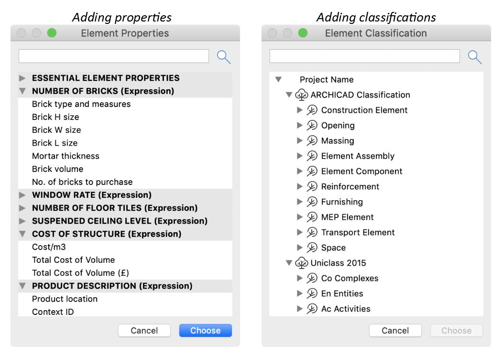
一次可以选择并添加多个项目，但请注意每个系统只能添加一个分类。当 Live Edit 激活时，所选特征标记会立即添加到选中的构件上。
当 Live Edit 关闭时，特征标记只是被添加到一个静态列表（对选中的构件或工具默认设置不做任何改动）。要把这些特征标记注入选中的构件，请在面板列表中选中要添加的特征标记，然后点击注入按钮（

）。请注意，在 Live Edit 关闭时，很容易在后续的构件选择上重复此操作，因为面板列表不受构件选择或视图变化的影响。第 3.3.5 节提供了添加属性的更多细节。
在 Live Edit 关闭时添加的任何特征标记还可以被自动注入到新构件中——更多细节参见第 3.2.7 节。
Select the target elements, click the ‘add’ button (
) under the relevant list and select the traits to be added when the list appears:
Multiple items can be selected and added in one step, but note that only one classification can be added per system. When Live Edit is active, the selected traits are immediately added to the selected elements.
When Live Edit is off, the traits are simply added to a static list (nothing happens to selected elements or tool default). To inject these traits into selected elements, pick the traits to be added in the palette list and click the inject button (
). Note that it is very easy to repeat this action on subsequent element selections when Live Edit is off because the palette list is unaffected by element selection or view changes. Section 3.3.5 provides more detail for adding properties.
Any traits added when Live Edit is off can also be automatically injected into new elements – refer to section 3.2.7 for more detail.
英文原文对照Official English Original
Select the target elements, click the ‘add’ button (
) under the relevant list and select the traits to be added when the list appears:
Multiple items can be selected and added in one step, but note that only one classification can be added per system. When Live Edit is active, the selected traits are immediately added to the selected elements.
When Live Edit is off, the traits are simply added to a static list (nothing happens to selected elements or tool default). To inject these traits into selected elements, pick the traits to be added in the palette list and click the inject button (
). Note that it is very easy to repeat this action on subsequent element selections when Live Edit is off because the palette list is unaffected by element selection or view changes. Section 3.3.5 provides more detail for adding properties.
Any traits added when Live Edit is off can also be automatically injected into new elements – refer to section 3.2.7 for more detail.
3.2.2 如何移除特征标记
3.2.2 How to remove Traits
只有在 Live Edit 开启时，才能直接从构件中移除特征标记。选中目标构件，在面板列表中选中要移除的特征标记，然后点击删除按钮（
）。第 3.3.6 节提供了移除构件属性的更多细节。
在 Live Edit 关闭时点击删除按钮，只是把选中的特征标记从静态面板列表中移除（选中的构件不受影响）。
Traits can only be directly removed from elements when Live Edit is on. Select the target elements, select the traits to be removed in the palette list and click the delete button (
). Section 3.3.6 provides more detail for removing element properties.
Clicking the delete button when Live Edit is off simply removes the selected traits from the static palette list (selected elements are unaffected).
英文原文对照Official English Original
Traits can only be directly removed from elements when Live Edit is on. Select the target elements, select the traits to be removed in the palette list and click the delete button (
). Section 3.3.6 provides more detail for removing element properties.
Clicking the delete button when Live Edit is off simply removes the selected traits from the static palette list (selected elements are unaffected).
3.2.3 如何把所选特征标记设置或转移到构件中
3.2.3 How to set or transfer selected traits into elements
ARCHICAD 已经提供了一种从一个构件提取数据并注入另一个构件的方法，但在管理属性取值方面缺乏任何细节。Metadata 面板允许把任意选择的特征标记应用到选中的构件或从构件中转移，甚至可以只更改单个属性值。此方法仅适用于 Live Edit 关闭的情况。
点击提取按钮（

）可以把从选中构件中提取的特征标记（包括属性值）填充到面板中。它们也可以手动添加（点击

）、移除（点击

）并在列表中编辑取值。通过选中它们并点击注入按钮（

）可以把这些特征标记转移到其他构件中。如果面板列表中没有选中任何特征标记，则整个特征标记列表会替换此前指派给该构件的全部内容（因此特征标记可以同时被添加和移除）。如果列表中选中了任何项，则只注入这些项（不会有任何内容被移除）。
关于管理构件属性值的更多细节，见第 3.3.9 节。
ARCHICAD already provides a method for extracting data from one element and injecting it into another, but lacks any detail for managing property values. The Metadata palette allows any selection of traits to be applied or transferred to selected elements, even allowing just a single property value to be changed. This method is only applicable when Live Edit is off.
The palette can be populated with traits extracted from selected elements (including property values) by clicking the extract button (
). They can also be manually added (clicking
), removed (clicking
) and values edited in the list. These traits can be transferred into other elements by selecting them and clicking the inject button (
). If no traits are selected in the palette list, the entire list of traits replaces everything previously assigned to the element (so traits may be simultaneously added and removed). If any are selected in the list, only those traits are injected (and nothing is removed).
Some additional detail for managing element property values is provided in section 3.3.9.
英文原文对照Official English Original
ARCHICAD already provides a method for extracting data from one element and injecting it into another, but lacks any detail for managing property values. The Metadata palette allows any selection of traits to be applied or transferred to selected elements, even allowing just a single property value to be changed. This method is only applicable when Live Edit is off.
The palette can be populated with traits extracted from selected elements (including property values) by clicking the extract button (
). They can also be manually added (clicking
), removed (clicking
) and values edited in the list. These traits can be transferred into other elements by selecting them and clicking the inject button (
). If no traits are selected in the palette list, the entire list of traits replaces everything previously assigned to the element (so traits may be simultaneously added and removed). If any are selected in the list, only those traits are injected (and nothing is removed).
Some additional detail for managing element property values is provided in section 3.3.9.
3.2.4 如何选择匹配指定特征标记的构件
3.2.4 How to select elements matching specified traits
此功能仅在 Live Edit 开启时可用。只需点击任意组合的特征标记，然后点击选择匹配项（select matching）按钮（
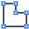
）。同一视图中的任何匹配所选特征标记的构件都会被加入当前选择集。视图会缩放到整个选择集。
关于选择具有匹配属性值的构件的更多细节，见第 3.3.7 节。
This feature only works when Live Edit is on. Simply click on any combination traits and click the select matching button (
). Any elements in the same view matching the selected traits will be added to the current selection. The current view will be zoomed to the entire selection.
Some additional detail for selecting elements with matching property values is provided in section 3.3.7.
英文原文对照Official English Original
This feature only works when Live Edit is on. Simply click on any combination traits and click the select matching button (
). Any elements in the same view matching the selected traits will be added to the current selection. The current view will be zoomed to the entire selection.
Some additional detail for selecting elements with matching property values is provided in section 3.3.7.
3.2.5 如何把选中构件筛选为匹配所选特征标记的构件
3.2.5 How to filter selected elements to those matching selected traits
此功能仅在 Live Edit 开启时可用。只需点击任意组合的特征标记，然后点击按特征标记筛选按钮（

）。只有具有匹配特征标记的构件会保持选中。视图会缩放到整个选择集。
关于按属性取值筛选选择集的更多细节，见第 3.3.8 节。
This feature only works when Live Edit is on. Simply click on any combination traits and click the filter by traits button (
). Only elements with matching traits will remain selected. The current view will be zoomed to the entire selection.
Some additional detail for filtering the selection based on property values is provided in section 3.3.8.
英文原文对照Official English Original
This feature only works when Live Edit is on. Simply click on any combination traits and click the filter by traits button (
). Only elements with matching traits will remain selected. The current view will be zoomed to the entire selection.
Some additional detail for filtering the selection based on property values is provided in section 3.3.8.
3.2.6 如何快速发现选中构件中的异常或问题
3.2.6 How to quickly spot anomalies or problems in selected elements
Metadata 面板中列出特征标记所采用的文字样式，能就其状态提供重要反馈。
例如：
- 蓝色表示该特征标记并非选中构件所共有，这对于发现本应统一的特征标记很有用。ARCHICAD 的 Find & Select（查找并选择）面板可与此功能配合使用：先找出本应完全相同的构件，再检查 Metadata 面板中是否存在不一致。
- 当一个属性在选中构件上具有多个取值时，会使用粗体显示。点击展开三角即可查看这些取值。
发现异常的特征标记或属性值后，可以在列表中选中相应的特征标记/取值，然后点击按特征标记筛选（filter by traits）按钮，把相关构件隔离出来。第 3.3.8 节给出了一个使用属性的示例。
The text style of traits listed in the Metadata palette provides important feedback about the their status.
For example:
- Blue indicates that the trait is not common to the selected elements, which is useful for spotting traits that are supposed to be uniform. ARCHICAD’s Find & Select palette is useful in conjunction with this feature, first finding elements that should be identical and then checking the Metadata palette for inconsistencies.
- A bold face is used wherever a property has multiple values across the selected elements. The values can be viewed by clicking the disclosure triangle.
When an anomalous trait or property value is spotted, the contributing elements can be isolated by selecting the traits/values in the list and clicking the filter by traits button. An example using properties can be seen in section 3.3.8.
英文原文对照Official English Original
The text style of traits listed in the Metadata palette provides important feedback about the their status.
For example:
- Blue indicates that the trait is not common to the selected elements, which is useful for spotting traits that are supposed to be uniform. ARCHICAD’s Find & Select palette is useful in conjunction with this feature, first finding elements that should be identical and then checking the Metadata palette for inconsistencies.
- A bold face is used wherever a property has multiple values across the selected elements. The values can be viewed by clicking the disclosure triangle.
When an anomalous trait or property value is spotted, the contributing elements can be isolated by selecting the traits/values in the list and clicking the filter by traits button. An example using properties can be seen in section 3.3.8.
3.2.7 如何自动给新构件添加特征标记
3.2.7 How to automatically add traits to new elements
新构件的设置通常由相应工具的 Settings（设置）对话框决定。ARCHICAD 的 Info（信息）面板和 CI Tools 的 Metadata 面板也提供了这些设置的交互式视图，但这些设置绝不会被多个使用 ARCHICAD 基础功能的工具共享。
不过，Metadata 面板可以把特征标记应用到任意类型的新构件上。面板中显示的任何特征标记都会被添加到每一个新构件上，无论其类型，而 Settings 对话框中的数据保持不变。当一系列构件必须共享某些特征标记或取值时，该功能很有用，因为它省去了打开多个 Settings 对话框反复做同样更改的麻烦。
例如，一个项目可能有一套针对不同施工阶段和/或建筑特征的分类系统。只要激活分类注入并选择相应的分类，正确的分类就能自动应用到所有绘制的对象上（无论使用哪个工具）。
面板中属性和分类的标题是按钮，用于打开和关闭注入功能：
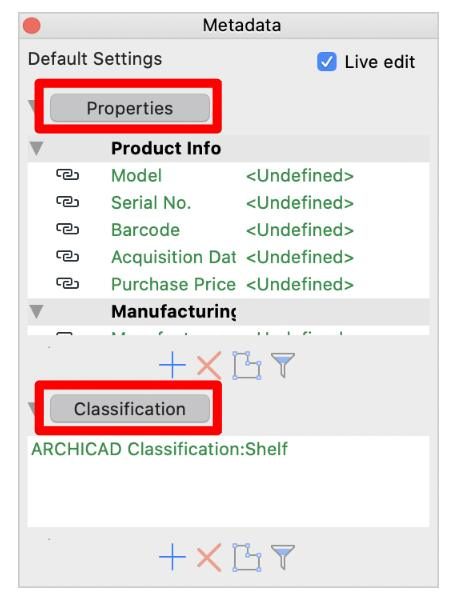
无论 Live Edit 开启还是关闭，只要这些按钮被打开，特征标记就会被注入到新构件中。任何要被注入的属性或分类都以绿色高亮显示。请注意，注入不同的分类会自动注入与该分类关联的所有附加属性（同样以绿色高亮显示）。
请注意，任何要被自动注入的分类和属性都可以随时通过关闭 Live Edit 来编辑。否则，无论在 Live Edit 激活状态下进行何种编辑，这些特征标记都保持不变。与被注入属性关联的属性值同样保持不变，除非被明确编辑。
请注意，在 ARCHICAD 标准工具设置对话框中查看的设置绝不会因该功能而改变。因此，可以按需打开和关闭注入，而不会影响其他任何设置。
The settings for new elements are usually governed by the Settings dialog for the relevant tool. The ARCHICAD Info and CI Tools Metadata palettes also provide an interactive view on those settings, but these settings are never shared by multiple tools using base ARCHICAD features.
However, the Metadata palette can apply traits to new elements of any type. Any traits displayed in the palette will be added to every new element irrespective of type, but the data in the Settings dialog remains unchanged. This feature is beneficial when a series of elements must share certain traits or values because it removes the need to open multiple Settings dialogs to repeatedly make the same change.
For example, a project may have a classification system targeting different construction stages and/or building features. The correct classification can be automatically applied to everything drawn (with any tool) simply by activating classification injection and picking the appropriate classification.
The palette headings for properties and classifications are buttons that toggles the injection feature on and off:
Traits will be injected into new elements when these buttons are toggled on whether Live Edit is on or off. Any properties or classifications to be injected are highlighted in green. Note that injecting a different classification will automatically inject any additional properties associated with that classification (also highlighted in green).
Note that any classifications and properties to be automatically injected can be edited at any time by switching off Live Edit. Otherwise, these traits remain constant irrespective of editing carries out in with Live Edit active. Any property values associated with injected properties are also constant unless they are explicitly edited.
Note that the settings viewed in ARCHICAD’s standard tool settings dialogs are never changed by this feature. Therefore, injection can be toggled on and off at need without disturbing any other settings.
英文原文对照Official English Original
The settings for new elements are usually governed by the Settings dialog for the relevant tool. The ARCHICAD Info and CI Tools Metadata palettes also provide an interactive view on those settings, but these settings are never shared by multiple tools using base ARCHICAD features.
However, the Metadata palette can apply traits to new elements of any type. Any traits displayed in the palette will be added to every new element irrespective of type, but the data in the Settings dialog remains unchanged. This feature is beneficial when a series of elements must share certain traits or values because it removes the need to open multiple Settings dialogs to repeatedly make the same change.
For example, a project may have a classification system targeting different construction stages and/or building features. The correct classification can be automatically applied to everything drawn (with any tool) simply by activating classification injection and picking the appropriate classification.
The palette headings for properties and classifications are buttons that toggles the injection feature on and off:
Traits will be injected into new elements when these buttons are toggled on whether Live Edit is on or off. Any properties or classifications to be injected are highlighted in green. Note that injecting a different classification will automatically inject any additional properties associated with that classification (also highlighted in green).
Note that any classifications and properties to be automatically injected can be edited at any time by switching off Live Edit. Otherwise, these traits remain constant irrespective of editing carries out in with Live Edit active. Any property values associated with injected properties are also constant unless they are explicitly edited.
Note that the settings viewed in ARCHICAD’s standard tool settings dialogs are never changed by this feature. Therefore, injection can be toggled on and off at need without disturbing any other settings.
3.3 管理属性
3.3 Managing Properties
ARCHICAD 属性通常与其他任何特征标记一样显示和管理（见上一节），但成对的取值增加了复杂性。本节描述与属性取值相关的一些特殊特性。所有属性更改都可以撤销。
ARCHICAD properties are generally displayed and managed like any other trait (in the previous section) but the paired value adds complexity. This section describes any special characteristics associated with property values. All property changes are undoable.
英文原文对照Official English Original
ARCHICAD properties are generally displayed and managed like any other trait (in the previous section) but the paired value adds complexity. This section describes any special characteristics associated with property values. All property changes are undoable.
3.3.1 性能提示
3.3.1 Performance Notes
Metadata 面板会显示所有属性值，即使它们是通过表达式计算得出的。在某些情况下，面板刷新可能会造成明显的延迟，具体取决于：
- 属性的数量；
- 属性表达式的复杂度；
- 选中构件的数量。
如果延迟变得明显，而你并不需要属性值，点击 Properties（属性）的展开三角以折叠该面板。属性求值将停止运行，速度会恢复正常。
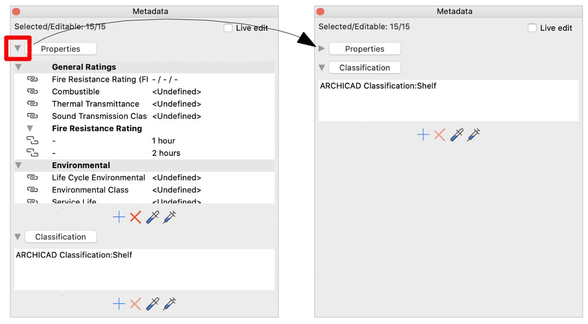
无需关闭面板。
The metadata palette displays all property values, even when calculated by expression. There may be times when the palette refresh causes a noticeable lag, depending on:
- The number of properties;
- The complexity of the property expressions;
- The number of selected elements.
If the delay becomes noticeable and property values are not required, click the Properties disclosure triangle to collapse the panel. Property evaluation will become inactive and normal speed will resume.
There is no need to close the palette.
英文原文对照Official English Original
The metadata palette displays all property values, even when calculated by expression. There may be times when the palette refresh causes a noticeable lag, depending on:
- The number of properties;
- The complexity of the property expressions;
- The number of selected elements.
If the delay becomes noticeable and property values are not required, click the Properties disclosure triangle to collapse the panel. Property evaluation will become inactive and normal speed will resume.
There is no need to close the palette.
3.3.2 如何编辑单个属性值
3.3.2 How to edit a single property value
在 Metadata 面板中编辑单个属性值与 ARCHICAD 界面完全一致，并提供相同的功能。当 Live Edit 开启时，任何具有该属性的选中构件都会立即更新为新值。
Editing individual property values in the Metadata palette is identical to the ARCHICAD UI and offers the same features. When Live Edit is on, any selected elements with that property are immediately updated with the new value.
英文原文对照Official English Original
Editing individual property values in the Metadata palette is identical to the ARCHICAD UI and offers the same features. When Live Edit is on, any selected elements with that property are immediately updated with the new value.
3.3.3 如何查看同一属性的不同取值
3.3.3 How to view different values for the same property
当一个属性在多个选中构件上具有不同取值时，该属性名称会以粗体显示，并带有一个展开三角。点击该展开三角即可显示各属性值：
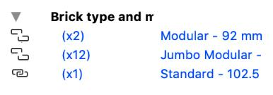
括号中显示的是设为每个取值的构件数量。如果并非所有选中的构件都有该属性，属性名称也可能显示为蓝色。
When a property has different values across multiple selected elements, the property name is displayed in a bold face with a leading disclosure triangle. The property values are revealed by clicking the disclosure triangle:
The number of elements set to each value is displayed in parentheses. The property name may also be displayed in blue if not all the selected elements have that property.
英文原文对照Official English Original
When a property has different values across multiple selected elements, the property name is displayed in a bold face with a leading disclosure triangle. The property values are revealed by clicking the disclosure triangle:
The number of elements set to each value is displayed in parentheses. The property name may also be displayed in blue if not all the selected elements have that property.
3.3.4 如何同时编辑多个属性值
3.3.4 How to edit multiple property values simultaneously
可以在面板中同时选中多个属性值，但只有最前面的那个会显示为可编辑。如果更改了该取值，所有选中的取值都会改为相同的值（相关构件也会随之更新）。如果把不同的取值改成相同的值，它们会合并为一行。
例如，一组墙体有 3 种不同的砖类型——主流类型应保持不变（“Jumbo Modular”），另外两种应改为 “Ambassador”：
a) 选中要更改的属性值并选取一个新取值；
b) 面板更新为只显示所需的 2 种砖类型。
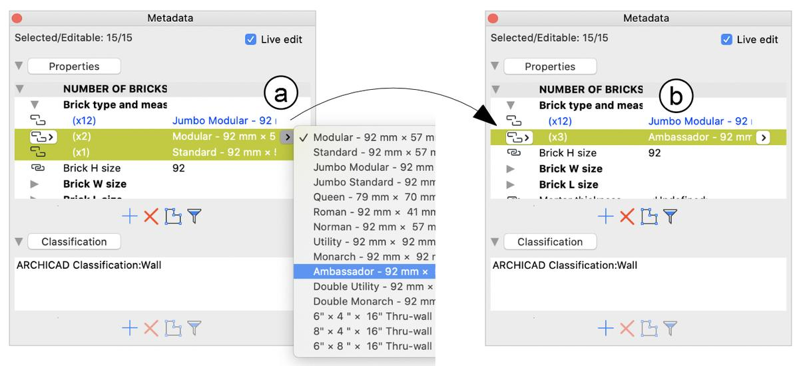
属性值的更改可以撤销。
Multiple property values can be simultaneously selected in the palette, but only the foremost will be shown as editable. If that value is changed, all selected values will be changed to the same value (and associated elements are updated). If different values are changed to the same value, they will collapse to a single row.
For example, a selection of walls is noted to have 3 different brick types – the predominant type should remain unchanged (“Jumbo Modular”) but the other two should become “Ambassador”:
a) Select the property values to be changed and pick a new value;
b) The palette is updated to show just 2 types of brick as required.
Property value changes are undoable.
英文原文对照Official English Original
Multiple property values can be simultaneously selected in the palette, but only the foremost will be shown as editable. If that value is changed, all selected values will be changed to the same value (and associated elements are updated). If different values are changed to the same value, they will collapse to a single row.
For example, a selection of walls is noted to have 3 different brick types – the predominant type should remain unchanged (“Jumbo Modular”) but the other two should become “Ambassador”:
a) Select the property values to be changed and pick a new value;
b) The palette is updated to show just 2 types of brick as required.
Property value changes are undoable.
3.3.5 如何给构件添加属性
3.3.5 How to add a property to an element
添加属性本质上与添加其他任何特征标记相同，但有一个重要区别。属性是基于分类与构件关联的——因此，给构件添加属性的唯一方式是更改它所关联的分类，即把该属性添加到分类中。Metadata 会自动完成这一步，以便于添加属性。该更改是非破坏性的且可撤销，但需要明白的是，给构件添加属性同样会影响具有相同分类的其他构件。
属性可以同时添加到多个构件上，这可能导致多个分类发生变化。
Adding a property is essentially the same as adding any other trait, but there is an important difference. Properties are associated with elements on the basis of their classification – therefore, the only way to add a property to an element is to change the classification it is associated with, i.e. by adding the property to the classification. Metadatawill do this automatically to facilitate adding a property. The change is non-destructive and undoable, but it is important to understand that adding a property to an element will likewise affect other elements with the same classification.
Properties can be added to multiple elements simultaneously, which could result in changes to multiple classifications.
英文原文对照Official English Original
Adding a property is essentially the same as adding any other trait, but there is an important difference. Properties are associated with elements on the basis of their classification – therefore, the only way to add a property to an element is to change the classification it is associated with, i.e. by adding the property to the classification. Metadatawill do this automatically to facilitate adding a property. The change is non-destructive and undoable, but it is important to understand that adding a property to an element will likewise affect other elements with the same classification.
Properties can be added to multiple elements simultaneously, which could result in changes to multiple classifications.
3.3.6 如何从构件中删除属性
3.3.6 How to delete a property from an element
从构件中移除属性的过程与其他任何特征标记相同，但插件实现这一点的方式有一个重要区别。属性是基于分类与构件关联的——因此，从构件中移除属性的唯一方式是更改它所关联的分类，即从分类中移除该属性。
Metadata 不这样做，因为那具有破坏性——也就是说，与许多其他构件关联的属性取值可能会被悄无声息地丢失。因此，插件只是把属性值设为未定义而非真正移除它——实际上，结果是一样的。
属性可以同时从多个构件中移除。属性移除操作可以撤销。
The process of removing a property from an element is the same as any other trait, but there is an important difference in how the add-on achieves this. Properties are associated with elements on the basis of their classification – therefore, the only way to remove a property from an element is to change the classification it is associated with, i.e. by removing the property to the classification.
Metadata doesn’t do this because it’s destructive, i.e. the property values associated with many other elements may be silently lost. Therefore, the add-on sets the property value to undefined rather than removing it – in effect, the result is the same.
Properties can be removed from multiple elements simultaneously. Property removal is undoable.
英文原文对照Official English Original
The process of removing a property from an element is the same as any other trait, but there is an important difference in how the add-on achieves this. Properties are associated with elements on the basis of their classification – therefore, the only way to remove a property from an element is to change the classification it is associated with, i.e. by removing the property to the classification.
Metadata doesn’t do this because it’s destructive, i.e. the property values associated with many other elements may be silently lost. Therefore, the add-on sets the property value to undefined rather than removing it – in effect, the result is the same.
Properties can be removed from multiple elements simultaneously. Property removal is undoable.
3.3.7 如何选择具有特定属性值的构件
3.3.7 How to select elements with specific property values
特征标记选择按钮（

）可以查找并选中具有相同属性的构件，而且还可以指定具体的取值。如果在面板中选中多个取值，则属性和取值与其中任意一项匹配的所有构件都会被加入选择集。视图会缩放到整个选择集。
例如，选中的墙体具有 1hr 的耐火等级，了解还有哪些墙体相同会很有用：
a) 选中 1hr 的属性值；
b) 点击选择按钮（
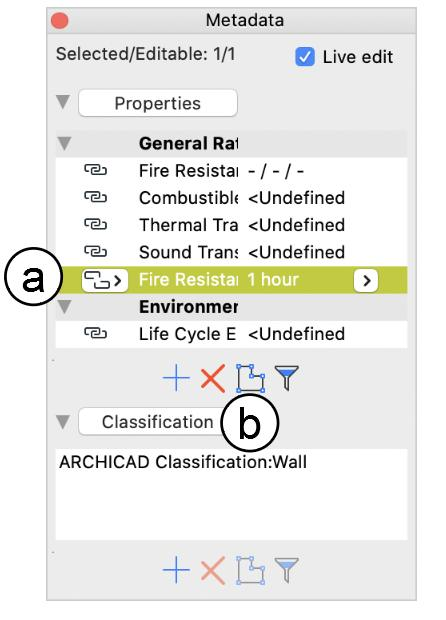
）以查找所有匹配的（可见的）墙体。
%%IMG2%%
The trait selection button (
) can find and select elements with the same property, but additionally with a specific value. If multiple values are selected in the palette, all elements with a property and value matching any one of those items will be added to the selection. The current view will be zoomed to the entire selection.
For example, a selected wall has a 1hr fire rating and it would be useful to know what other walls are the same:
a) Select the 1hr property value;
b) Click the selection button (
) to find all matching (visible) walls.
%%IMG2%%
英文原文对照Official English Original
The trait selection button (
) can find and select elements with the same property, but additionally with a specific value. If multiple values are selected in the palette, all elements with a property and value matching any one of those items will be added to the selection. The current view will be zoomed to the entire selection.
For example, a selected wall has a 1hr fire rating and it would be useful to know what other walls are the same:
a) Select the 1hr property value;
b) Click the selection button (
) to find all matching (visible) walls.
%%IMG2%%
3.3.8 如何筛选出匹配特定属性值的构件选择集
3.3.8 How to filter an element selection for those matching specific property values
特征标记筛选按钮（
）与其他特征标记一样可用于属性，但它还会把选择集筛选为具有相同属性且取值匹配的构件。如果在面板中选中多个取值，则属性和取值与其中任意一项匹配的构件都会通过筛选。视图会缩放到整个选择集。
例如，一组墙体本应全部指定相同的砖类型，但有 2 个例外，需要把它们隔离出来检查：
a) 选中那个不寻常的砖类型；
b) 点击筛选按钮（
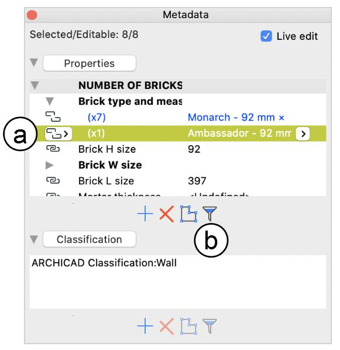
）把选择集缩减为仅剩那些砖类型不同的墙体。
%%IMG2%%
The trait filter button (
) works with properties in the same way as other traits, but also filters the selection to elements with the same property and a matching value. If multiple values are selected in the palette, elements with a property and value matching any one of those items will pass the filter. The current view will be zoomed to the entire selection.
For example, a selection of walls should all be assigned the same brick type, but there are 2 exceptions and these should be isolated for checking:
a) Select the unexpected brick type;
b) Click the filter button (
) to reduce the selection to only those walls with the varying brick type.
%%IMG2%%
英文原文对照Official English Original
The trait filter button (
) works with properties in the same way as other traits, but also filters the selection to elements with the same property and a matching value. If multiple values are selected in the palette, elements with a property and value matching any one of those items will pass the filter. The current view will be zoomed to the entire selection.
For example, a selection of walls should all be assigned the same brick type, but there are 2 exceptions and these should be isolated for checking:
a) Select the unexpected brick type;
b) Click the filter button (
) to reduce the selection to only those walls with the varying brick type.
%%IMG2%%
3.3.9 如何把带特定值的属性注入选中的构件
3.3.9 How to inject a property with a specific value into selected elements
当 Live Edit 开启时，属性可以像其他任何特征标记（trait）一样添加（使用添加特征标记按钮

）。取值可以通过选中该属性的所有值并将其编辑为所需值来设置。
或者，当 Live Edit 关闭时，可以把所需属性添加到列表中、设为所需值，然后点击注入按钮（

）将其设置到选中的构件中。
这两种方式有一个重要区别——前者在设置正确取值之前，如有必要会修改分类，以确保属性已附着；而后者只会为已经具有该属性的构件设置属性值（分类保持不变）。
例如，要从一组墙体中提取属性值，把耐火等级设为 1Hr、砖类型设为 “Ambassador” 到其他墙体上：
a) 选中要提取属性值的墙体，然后点击提取按钮（

）；
b) 选中要赋予新属性值的墙体，选择要应用的属性值，然后点击注入按钮（
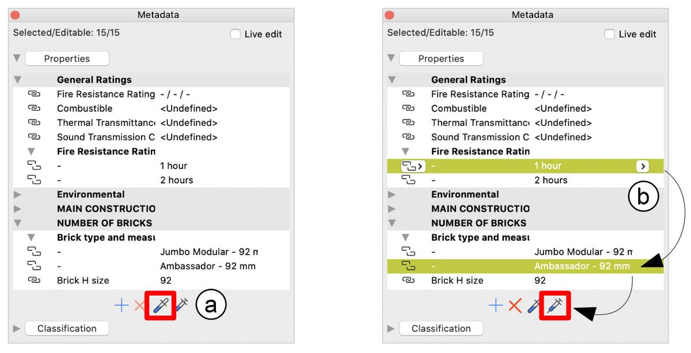
）。
%%IMG4%%
该技巧能极大简化把大量构件的详细属性值转移到其他构件上的过程。
When Live Edit is on, a property can be added in the same way as any other trait (with the add trait button
). The value can be set by selecting all values of that property and editing it the required value.
Alternatively, when Live Edit is off, the required property can be added to the list, set to the required value and set in the selected elements by clicking the inject button (
).
There is an important difference in these two approaches – the former will modify a classification if necessary to ensure the property is attached before setting the correct value, whereas the latter will only set the property value in elements that already have that property (and classifications remain unchanged).
For example, property values are extracted from a selection of walls. From these properties, the fire rating is to be set to 1Hr and brick type to “Ambassador” to other walls:
a) Select the walls to extract property values from and click the extract button (
);
b) Select the walls to have new property values, pick the property values to apply and click the inject button (
).
%%IMG4%%
This technique can greatly simplify the transfer of large selections of detailed property values to other elements.
英文原文对照Official English Original
When Live Edit is on, a property can be added in the same way as any other trait (with the add trait button
). The value can be set by selecting all values of that property and editing it the required value.
Alternatively, when Live Edit is off, the required property can be added to the list, set to the required value and set in the selected elements by clicking the inject button (
).
There is an important difference in these two approaches – the former will modify a classification if necessary to ensure the property is attached before setting the correct value, whereas the latter will only set the property value in elements that already have that property (and classifications remain unchanged).
For example, property values are extracted from a selection of walls. From these properties, the fire rating is to be set to 1Hr and brick type to “Ambassador” to other walls:
a) Select the walls to extract property values from and click the extract button (
);
b) Select the walls to have new property values, pick the property values to apply and click the inject button (
).
%%IMG4%%
This technique can greatly simplify the transfer of large selections of detailed property values to other elements.
使用 Metadata 面板进行批量编辑
Bulk Editing with Metadata Palette
当选中多个构件且属性已填充后，我们可以同时对多个构件进行批量更改。
在下面的选择集中选中了两个构件，一道墙和一块楼板。由于这些构件存在属性不匹配的情况——也就是说并非所有选中的构件都拥有相同的属性集——这些差异以蓝色标示。
如果属性显示为黑色，则可以对所有选中的构件进行批量编辑，这意味着所有选中的构件都共享该属性。在下面所示的案例中，一个自定义值 False 正被应用到这两个构件上。
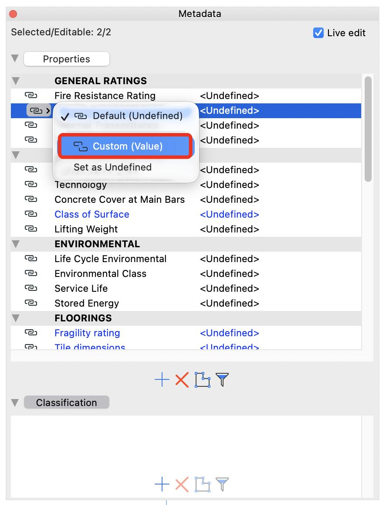
你可以根据 Property Manager（属性管理器）中的属性设置，从下拉列表中选择可用选项，或直接输入文本。
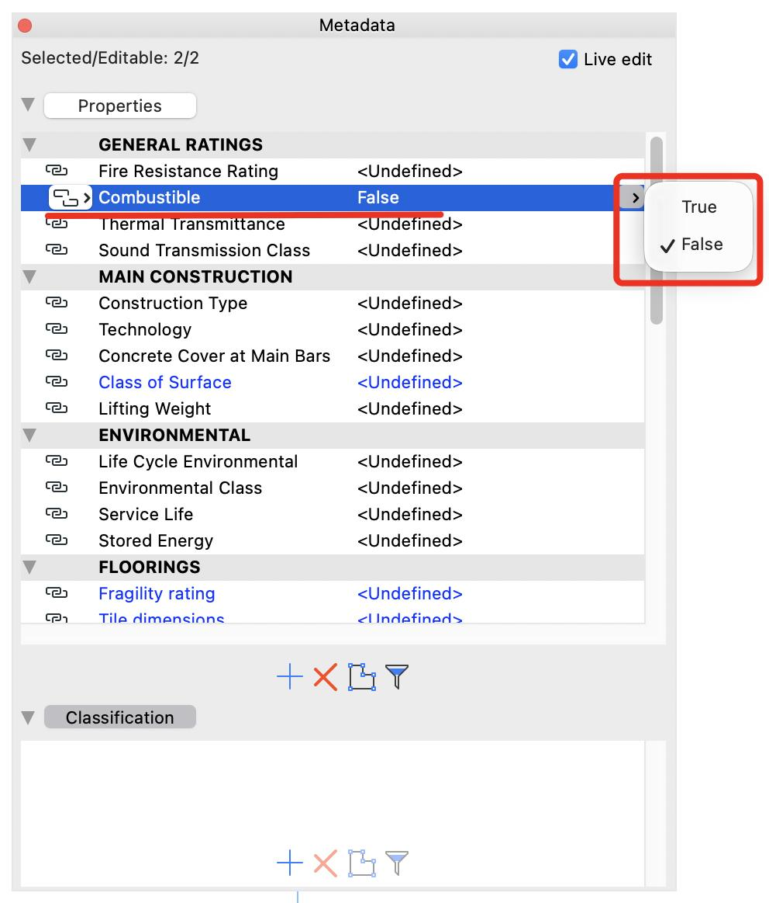
这使得在项目中面对大规模的构件选择时，无论构件类型如何都可以修改属性。
With Multiple Elements Selected and Properties Populated, we can make bulk changes to several Elements at the Same Time.
In the Selection below we have two elements selected, a wall and a slab. Because the Elements have a property mismatch, that is to say that not all Elements selected have the same property sets, these are indicated in blue.
It is then possible to do bulk editing across all selected Elements if the property is in Black, meaning that all selected Elements share this Property. In the case shown below a custom value of False is being applied to both these Elements.
We can select from the Property settings available as drop-downs or enter text depending on the Property Settings in the Property Manager.
This allows for Properties to be changed irrespective of the Element type across a large selection in the project.
英文原文对照Official English Original
With Multiple Elements Selected and Properties Populated, we can make bulk changes to several Elements at the Same Time.
In the Selection below we have two elements selected, a wall and a slab. Because the Elements have a property mismatch, that is to say that not all Elements selected have the same property sets, these are indicated in blue.
It is then possible to do bulk editing across all selected Elements if the property is in Black, meaning that all selected Elements share this Property. In the case shown below a custom value of False is being applied to both these Elements.
We can select from the Property settings available as drop-downs or enter text depending on the Property Settings in the Property Manager.
This allows for Properties to be changed irrespective of the Element type across a large selection in the project.
定义
Definitions
该插件目前聚焦于属性和分类，但未来可能会加入其他元数据。为了避免在整份文档中重复出现诸如「属性/分类」这样的表述，这些数据将统称为 BIM 构件的特征标记（traits）。只有包含这些特征标记的构件才能被该插件管理和度量，主要是那些能在三维建筑模型中看到的构件。
The add-on currently focusses on properties and classifications, but other metadata may be added in future. Rather than repeating expressions like “properties/classifications” throughout the document, this data will generally be summarised as BIM element traits. Only elements that contain these traits can be managed and measured by the add-on, primarily those that can be seen in the 3D building model.
英文原文对照Official English Original
The add-on currently focusses on properties and classifications, but other metadata may be added in future. Rather than repeating expressions like “properties/classifications” throughout the document, this data will generally be summarised as BIM element traits. Only elements that contain these traits can be managed and measured by the add-on, primarily those that can be seen in the 3D building model.
Metadata - 筛选与选择
Metadata - Filtering and Selecting
底部的控件作为筛选和选择工具非常强大，共有三种用法：
- 从 Live Edit 列表中添加或移除属性
- 基于特定属性进行选择
- 筛选并选择具有特定属性值的构件
下面我们逐一详细说明。
下面显示的四个按钮具有以下功能：
- 「加号」允许我们添加不在 Live Edit 属性列表中的属性
- 「X」将属性设为未定义（undefined），实际上意味着忽略该属性
- Selection（选择）按钮会基于所选属性扩展选择，把所有具有该属性值的构件加入选择集
- Filter（筛选）按钮将只选中具有特定值的构件，实际上会取消选中所有不具有该属性值的构件。
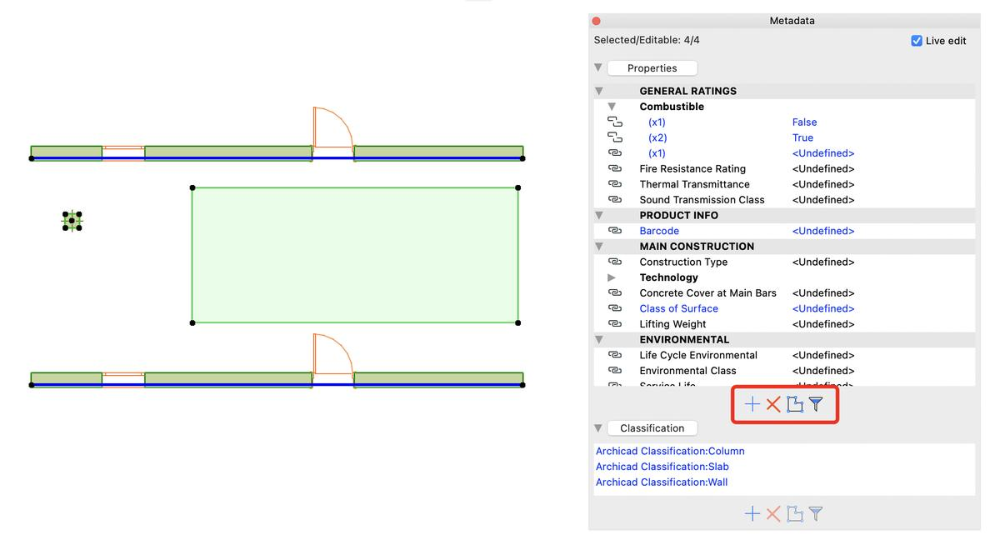
我们来看示例中的四个构件，以便说明清楚。
有两道相同的墙、一块楼板和一根柱。
为说明选择功能，我们只聚焦一个属性，即 ‘Combustible’（可燃性）。
在下图中，‘Combustible’ 属性按所示方式设置。
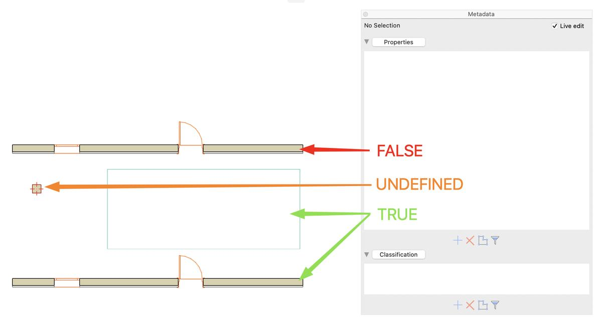
我们先看第 3 点 Selection（选择）和第 4 点 Filter（筛选）。
一旦我们选中全部 4 个构件，Metadata 面板中就会显示如下内容。
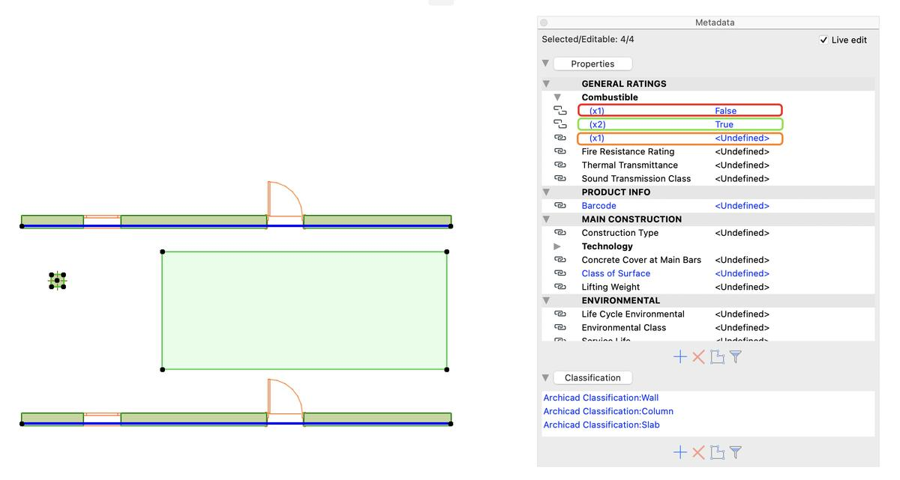
我们可以看到它与此前的取值相对应。如果我们在 Metadata 面板中选中 ‘True’ 值并点击第 4 点 Filter（筛选），它会取消选中其他构件，只在选择集中保留具有该值的两个构件。
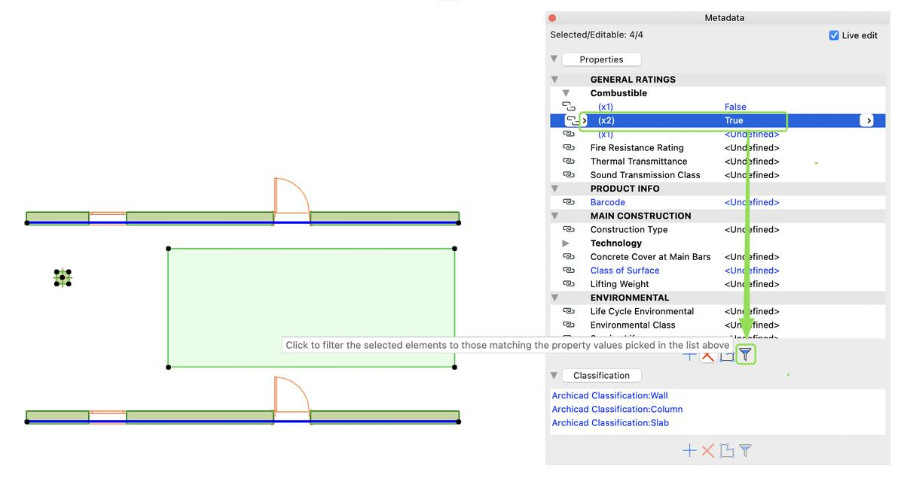
于是只有具有该属性值的构件保持选中状态。
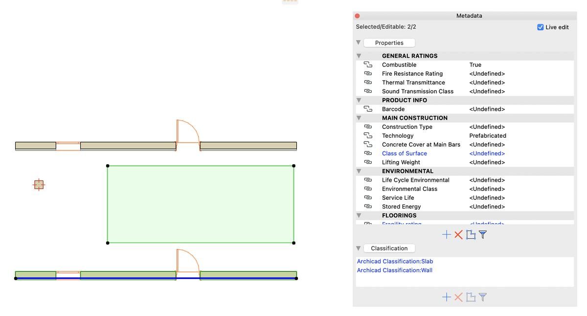
反过来，我们也可以选中其中一个构件，然后选中该属性以扩展选择。
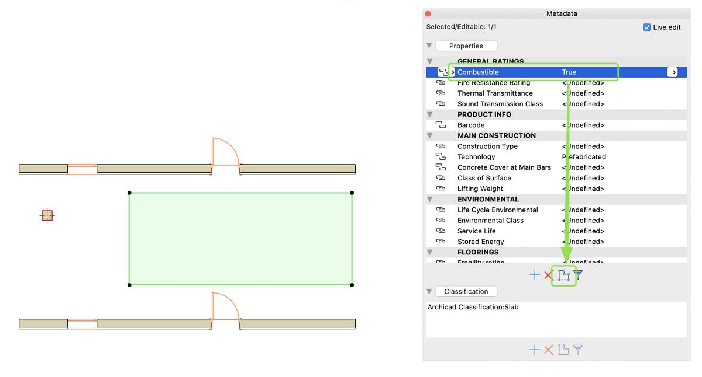
这会把所有具有相同取值的构件加入选择集。
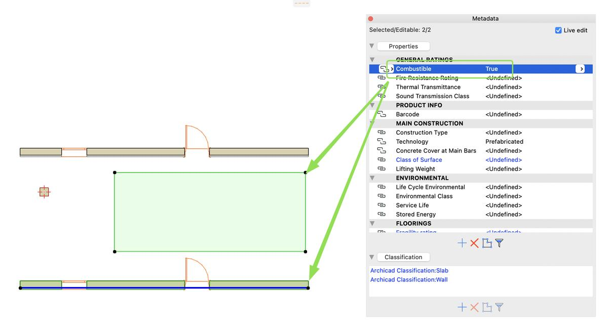
我们也可以在关闭 Live Edit 的情况下使用添加和删除属性的功能，随心所欲地操作属性。
The Controls at the bottom are very powerful to use as a filtering and selection tool in one of three ways:
- Add or Remove properties from the Live Edit list
- To make a selection based on a specific property
- Filter and select elements that have a specific property value
Let us look at these in more detail.
The four buttons shown below have the following Functions:
- The ‘plus’ allows us to add properties not in the Live edit list of properties
- The ‘X’ sets a property to undefined, which effectively means that it is ignored
- The Selection button will add to the selection based on a selected property, adding any elements that HAVE that property value to the selection
- The Filter button will select only elements that have a specific value, effectively de-selecting all elements that HAVE NOT got that property value.
Let us look at the four elements in the example to clarify.
We have two identical walls, one slab and one column.
We will focus on only one single property namely ‘Combustible’ to explain the selection functionality.
In the diagram below the ‘Combustible’ property is set as indicated
Let us look at point 3, Selection and 4, Filter first.
Once we have selected all 4 these Elements we will now see the following in the Metadata palette.
We can see it corresponds with the values from before. If we were to select the ‘True’ value from the Metadata palette and Click on 4, Filter, it will deselect the other elements and only retain the two elements that have that value in the selection.
and only those elements with that property value remain selected
Inversely we could select one of these elements, and select the property to add to the selection.
This will add any elements with the Same value to the selection.
We can also utilise the add and delete properties with Live edit switched off to manipulate properties as we see fit.
英文原文对照Official English Original
The Controls at the bottom are very powerful to use as a filtering and selection tool in one of three ways:
- Add or Remove properties from the Live Edit list
- To make a selection based on a specific property
- Filter and select elements that have a specific property value
Let us look at these in more detail.
The four buttons shown below have the following Functions:
- The ‘plus’ allows us to add properties not in the Live edit list of properties
- The ‘X’ sets a property to undefined, which effectively means that it is ignored
- The Selection button will add to the selection based on a selected property, adding any elements that HAVE that property value to the selection
- The Filter button will select only elements that have a specific value, effectively de-selecting all elements that HAVE NOT got that property value.
Let us look at the four elements in the example to clarify.
We have two identical walls, one slab and one column.
We will focus on only one single property namely ‘Combustible’ to explain the selection functionality.
In the diagram below the ‘Combustible’ property is set as indicated
Let us look at point 3, Selection and 4, Filter first.
Once we have selected all 4 these Elements we will now see the following in the Metadata palette.
We can see it corresponds with the values from before. If we were to select the ‘True’ value from the Metadata palette and Click on 4, Filter, it will deselect the other elements and only retain the two elements that have that value in the selection.
and only those elements with that property value remain selected
Inversely we could select one of these elements, and select the property to add to the selection.
This will add any elements with the Same value to the selection.
We can also utilise the add and delete properties with Live edit switched off to manipulate properties as we see fit.
概述
Overview
当 BIM 项目超越简单的几何模型、拥抱数据建模时，它们对设计、文档编制、施工和设施管理的流程而言会变得更有价值。例如 属性（properties） 和 分类（classifications） 这样的元数据，能让相对简单的对象毫无歧义地承担多种多样的角色。这一点在成本核算上尤其正确。即使成本完全可以通过 BIM 构件的几何形状来计算，所需的工作量也将大得令人却步。
例如，属性能让单个椅子对象代表来自不同制造商的各式各样产品。关键在于把这些信息承载在对象元数据中。然而，这也给 BIM 建模和 QA 检查流程带来更重的负担。错误或遗漏可能导致严重的成本或工期计算失误。
Metadata 插件的设计目的，就是在建模流程的每一个阶段帮助避免这些问题，为管理构件属性和分类提供交互式的查看与编辑功能。
标准的 ARCHICAD Settings（设置）对话框和 Info（信息）面板在多种原因下可能都不奏效：
- 看不到所选构件之间的差异；
- 无法同时编辑不同类型的构件；
- 离散的属性值选择无法轻松地在构件之间转移。
Metadata 面板正是为解决这些问题而明确设计的，它可以实现：
- 快速识别并修正非预期的差异，细化到很深的层次。
- 对多个构件进行元数据查看和编辑，即使它们类型不同。
- 在任意数量的构件之间提取和插入所选的属性值。
BIM projects become more valuable to to the processes of design, documentation, construction and facilities management when they expand beyond simple geometric models and embrace data modelling. Metadata like *p**roperties and classifications*, for example, enable relatively simple objects to play a wide variety of roles with no ambiguity. This is particularly true for costing. Even if it was possible for cost to be calculated exclusively from BIM element geometry, the effort involved would be prohibitive.
For example, properties enable a single chair object to represent a wide variety of products from different manufacturers. The key is to carry this information in the object metadata. However, this places a heavier burden on the BIM modelling and QA checking processes. Errors or omissions could result in serious cost or scheduling miscalculations.
The Metadata add-on has been designed to help avoid these problems at every stage of the modelling process, providing interactive viewing and editing facilities for managing element properties and classifications.
The standard ARCHICAD Settings dialog and Info palette can be ineffective for a variety or reasons:
- V ariations between selected element s cannot be seen;
- D ifferent element types cannot be edited simultaneously;
- Discrete property value selections cannot be easily transferred between elements.
The Metadata palette is explicitly designed to target these issues, enabling:
- U n expected variations to be quickly identified and remedied to a fine level of detail.
- Metadata v iewing and editing for multiple elements, even when they are of differing types.
- E xtraction and insertion of selected property values across any number o f elements .
英文原文对照Official English Original
BIM projects become more valuable to to the processes of design, documentation, construction and facilities management when they expand beyond simple geometric models and embrace data modelling. Metadata like *p**roperties and classifications*, for example, enable relatively simple objects to play a wide variety of roles with no ambiguity. This is particularly true for costing. Even if it was possible for cost to be calculated exclusively from BIM element geometry, the effort involved would be prohibitive.
For example, properties enable a single chair object to represent a wide variety of products from different manufacturers. The key is to carry this information in the object metadata. However, this places a heavier burden on the BIM modelling and QA checking processes. Errors or omissions could result in serious cost or scheduling miscalculations.
The Metadata add-on has been designed to help avoid these problems at every stage of the modelling process, providing interactive viewing and editing facilities for managing element properties and classifications.
The standard ARCHICAD Settings dialog and Info palette can be ineffective for a variety or reasons:
- V ariations between selected element s cannot be seen;
- D ifferent element types cannot be edited simultaneously;
- Discrete property value selections cannot be easily transferred between elements.
The Metadata palette is explicitly designed to target these issues, enabling:
- U n expected variations to be quickly identified and remedied to a fine level of detail.
- Metadata v iewing and editing for multiple elements, even when they are of differing types.
- E xtraction and insertion of selected property values across any number o f elements .
发行说明 - Metadata
Release Notes - Metadata
发行说明 - Metadata - 1.07
缺陷
MET-1 属性在 Metadata 面板中显示为未定义
Release notes - Metadata - 1.07
Bug
MET-1 Properties show as undefined in the metadata panel
英文原文对照Official English Original
Release notes - Metadata - 1.07
Bug
MET-1 Properties show as undefined in the metadata panel
使用 Metadata 转移属性
Using Metadata to transfer Properties
在关闭 Live Edit（实时编辑）的情况下，我们可以用以下方式使用 Metadata 工具把属性从一个构件转移到另一个构件。请确保 Live Edit 已关闭，如下图所示。
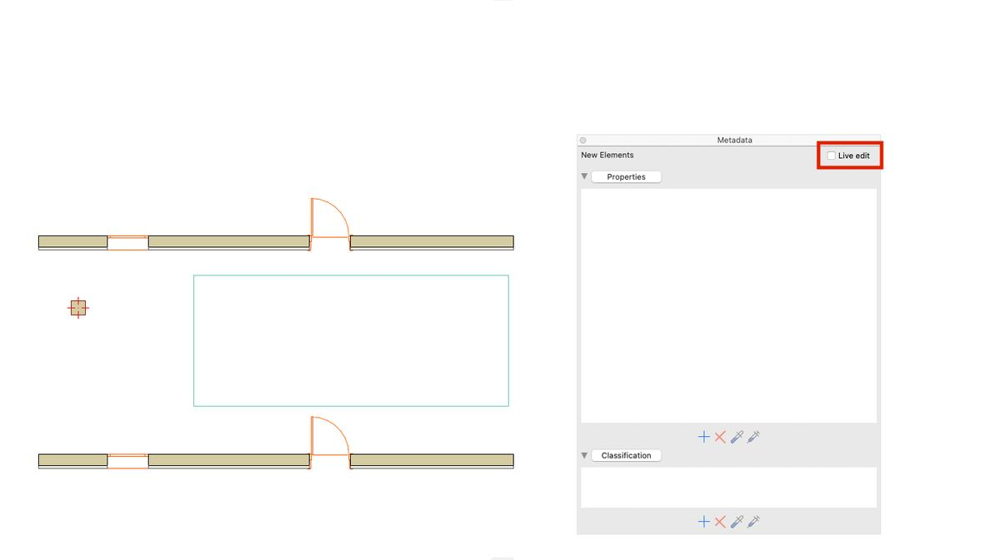
此时选中任意构件，列表不会像 Live Edit 开启时那样自动填充。
然后我们可以利用吸管（Eye Dropper）工具来获取某个构件或多个构件的属性。本例中我们选中那块楼板（Slab），并用吸管取出它的属性。
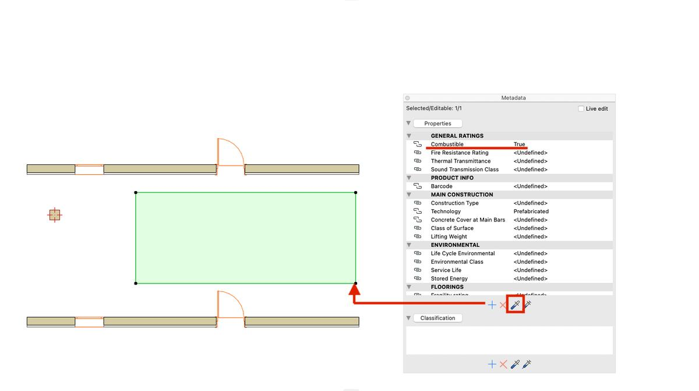
我们可以看到 Combustibility（可燃性）被设为 True。
现在可以删除我们不想要使用的属性，或更改所选属性「篮子」中的任意属性。
我们将只保留 Combustibility 和 Fire Rating（耐火等级）属性，并更改其中一个的值（我们只需选中不想转移的属性并点击 X 删除）。
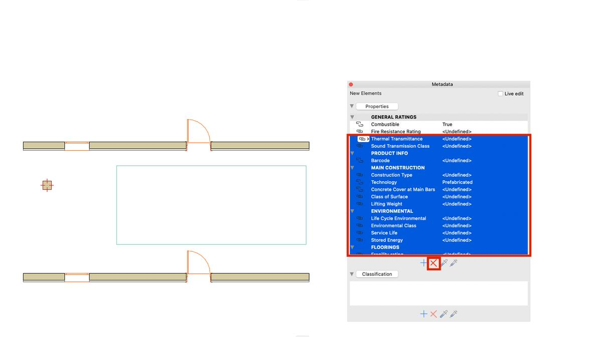
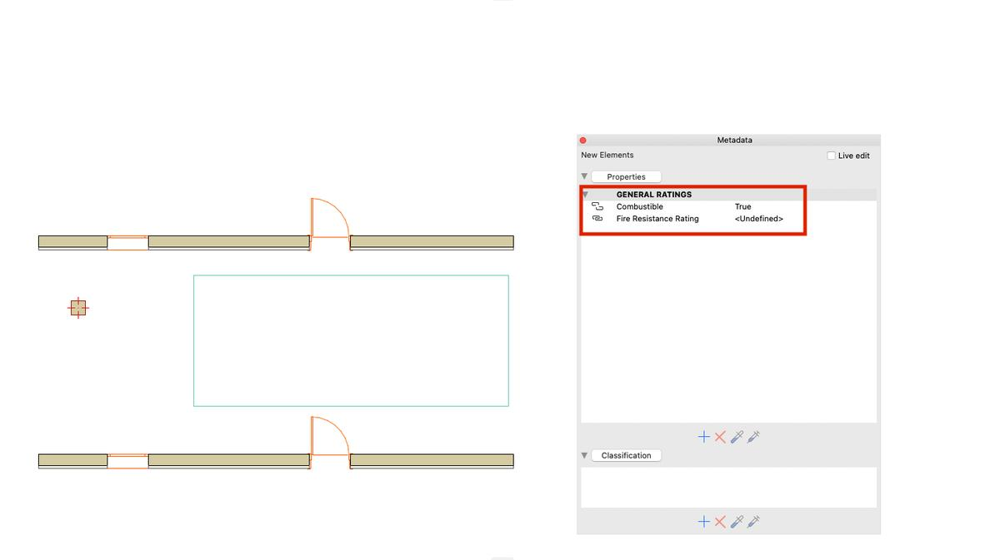
我们接着来更改 Fire Rating。
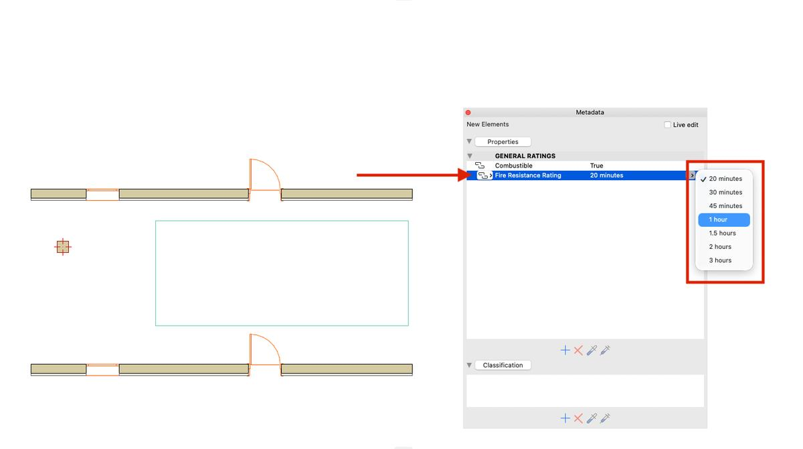
现在我们可以选中任意构件并转移属性，前提是该构件上存在这些属性。请注意，这可以在 Archicad 的 Property Manager（属性管理器）中编辑。
我们选中想要把属性转移过去的构件，然后点击 inject（注入）按钮。
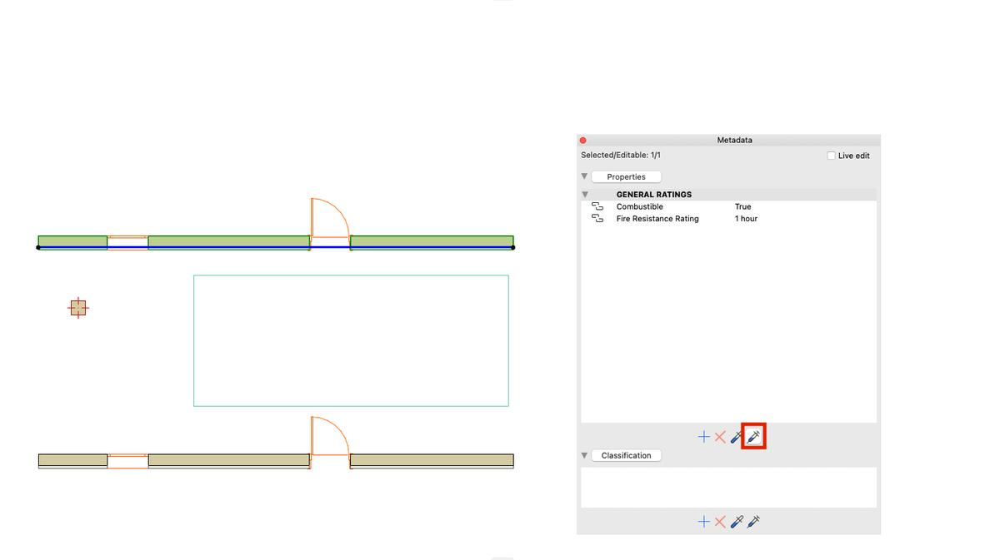
我们可以看到属性已在选中的墙体构件上被调整。
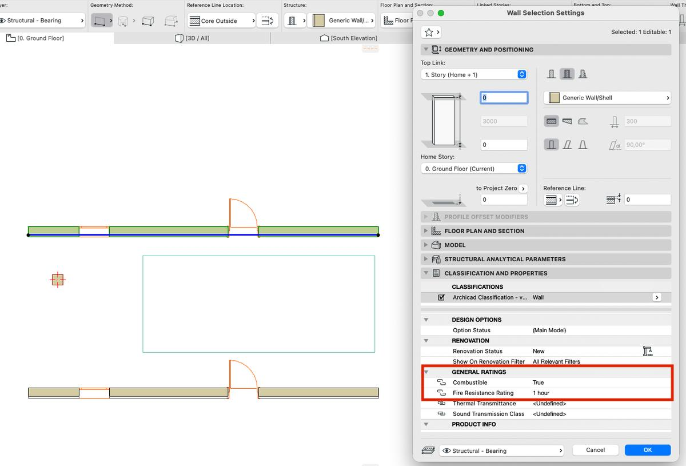
With the Live Edit Switched off we are able to use the Metadata Tool to transfer Properties from one Element to another in the following way. Ensure that Live Edit is switch off as shown below.
If we then select any Element the list will not automatically populate as is the case when we have Live Edit on.
We can then utilise the Eye Dropper tool to fetch the Properties of a selected Element, or multiple elements. We will select the Slab in our Example and add it’s properties with the Eye Dropper.
We can see that the Combustibility is set to True.
It is no possible to delete the properties that we do not wish to use, cange any of the ones in our selected ‘basket’ of Properties.
We will leave only the Combustibility and the Fire Rating Property, with an altered value (We simply select the Properties we don’t want to transfer and click the X to delete).
We will no proceed to change the Fire Rating
We can now select any Element and transfer the Properties, if those Properties are present in that Element. Please note this can be edited in Archicad’s Property Manager.
We select the Element that we ant to transfer the Properties to and Click the inject button
We can see the Properties have been adjusted in the selected wall Element.
英文原文对照Official English Original
With the Live Edit Switched off we are able to use the Metadata Tool to transfer Properties from one Element to another in the following way. Ensure that Live Edit is switch off as shown below.
If we then select any Element the list will not automatically populate as is the case when we have Live Edit on.
We can then utilise the Eye Dropper tool to fetch the Properties of a selected Element, or multiple elements. We will select the Slab in our Example and add it’s properties with the Eye Dropper.
We can see that the Combustibility is set to True.
It is no possible to delete the properties that we do not wish to use, cange any of the ones in our selected ‘basket’ of Properties.
We will leave only the Combustibility and the Fire Rating Property, with an altered value (We simply select the Properties we don’t want to transfer and click the X to delete).
We will no proceed to change the Fire Rating
We can now select any Element and transfer the Properties, if those Properties are present in that Element. Please note this can be edited in Archicad’s Property Manager.
We select the Element that we ant to transfer the Properties to and Click the inject button
We can see the Properties have been adjusted in the selected wall Element.
使用 Metadata 工具「即时」输入属性
Using the Metadata Tool to input Properties 'on the fly'
Metadata 工具还可以用于在 Archicad 中创建构件时自动填充属性。
我们将使用「+」按钮，把我们希望放入选择「篮子」中的属性加进来，以便在绘制新构件时自动填充。本例中我们将添加 Thermal Transmittance（传热系数）。
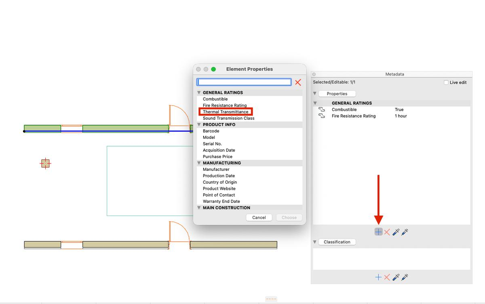
点击 Choose（选择），使其成为我们选择的一部分。
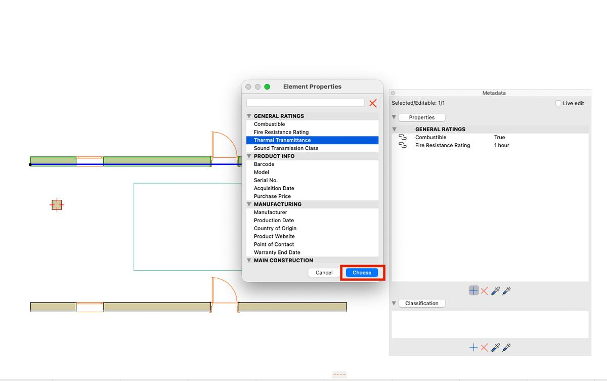
我们可以像之前一样在面板中定义该值。
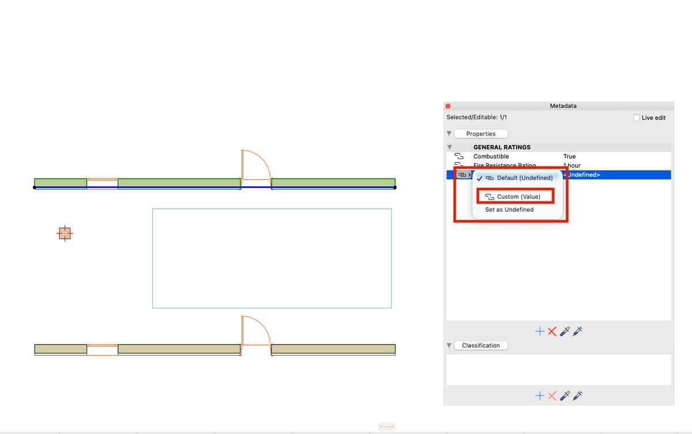
我们把它设为 5。
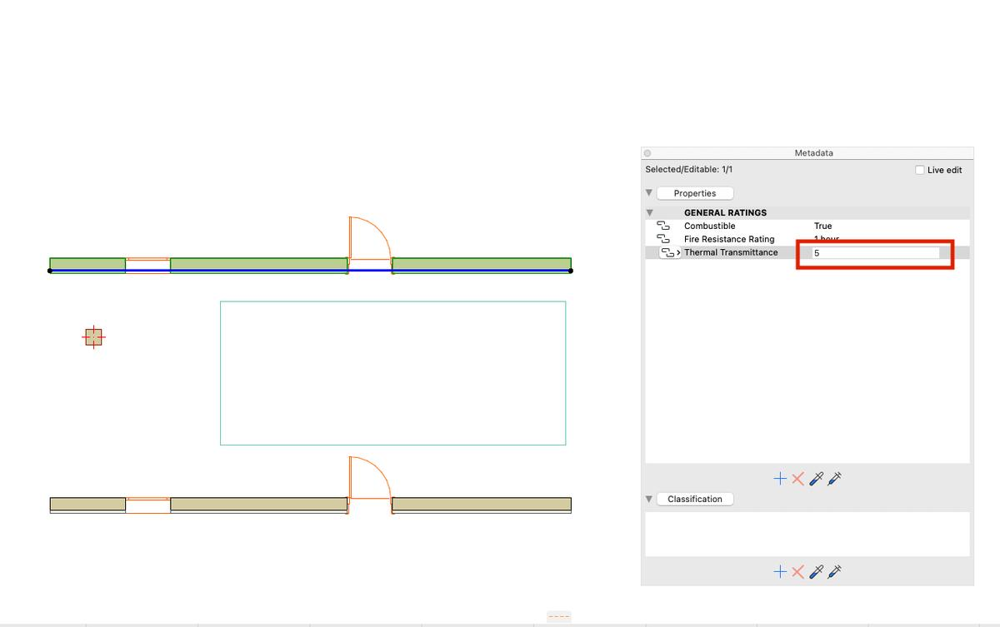
打开面板中的 Properties（属性）按钮后，任何以这些设置创建的构件都可以被自动填充到构件中。
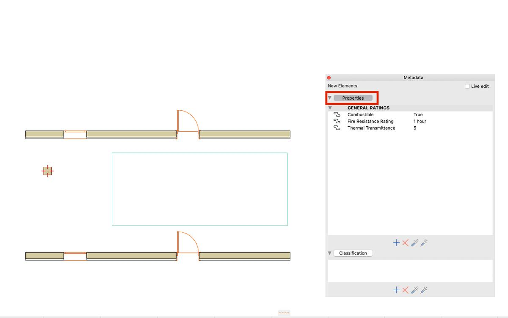
现在我们以绘制一根梁（Beam）为例，在绘制过程中我们会看到属性变成绿色，表示它们正在被导入到构件中。
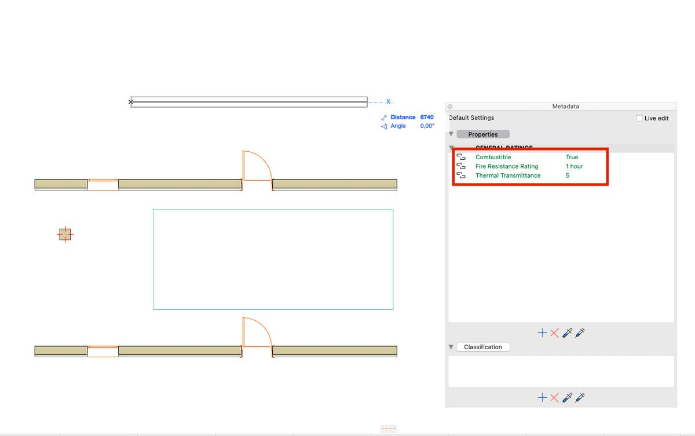
我们会看到这些属性已被转移到该梁上。
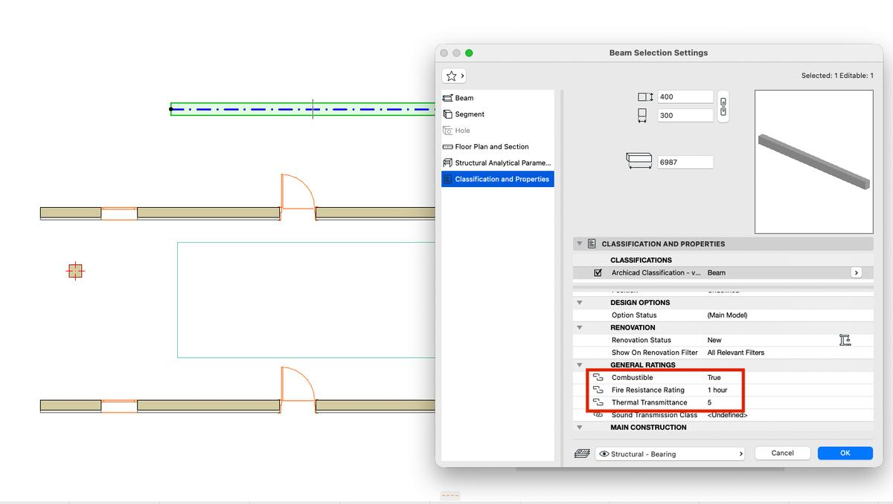
同样地，也可以控制新建构件的分类（Classification）。
我们再次用「+」号向 Metadata 面板添加一个分类。
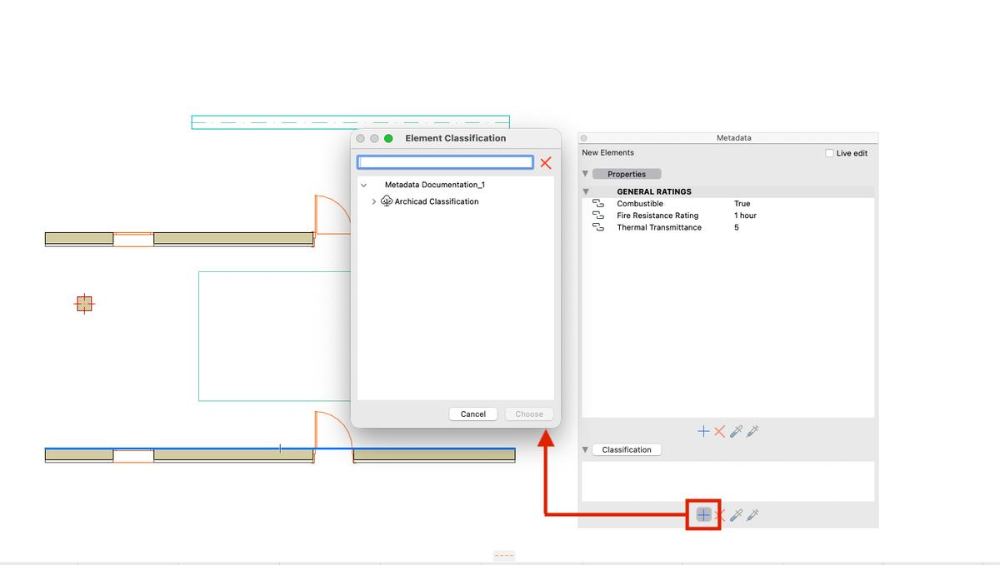
然后我们就可以从项目已加载的分类中选择任意一个分类。
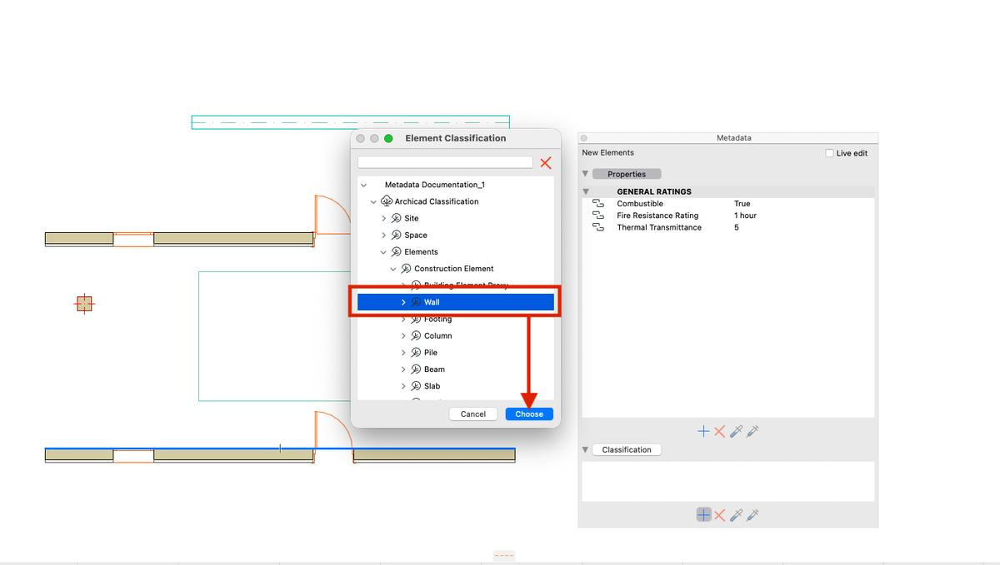
任何新建的构件都会自动拥有这个分类，以及此前所选择并调整过的属性。
必须点击 Classifications（分类）按钮来启用分类转移。
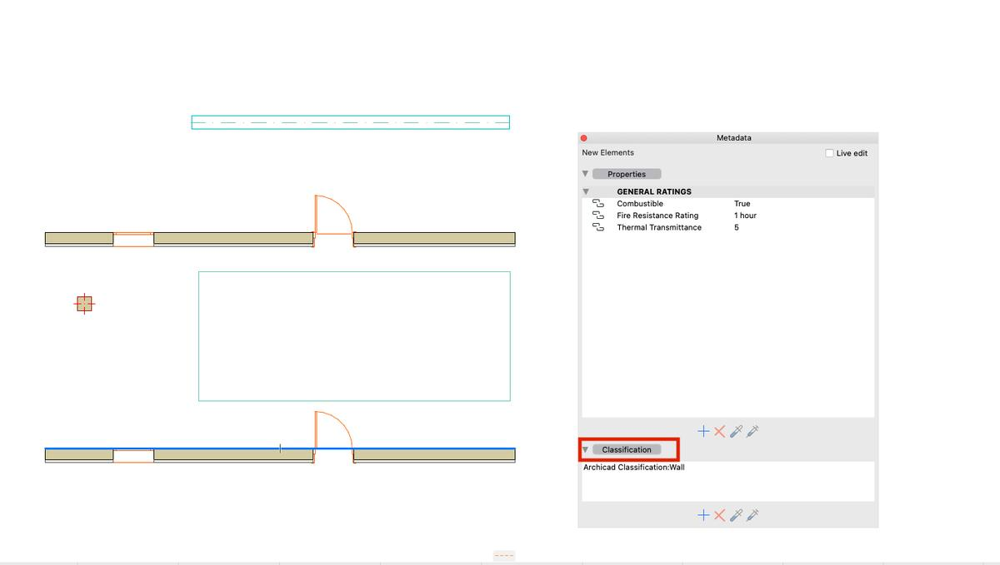
我们再来绘制一根梁。
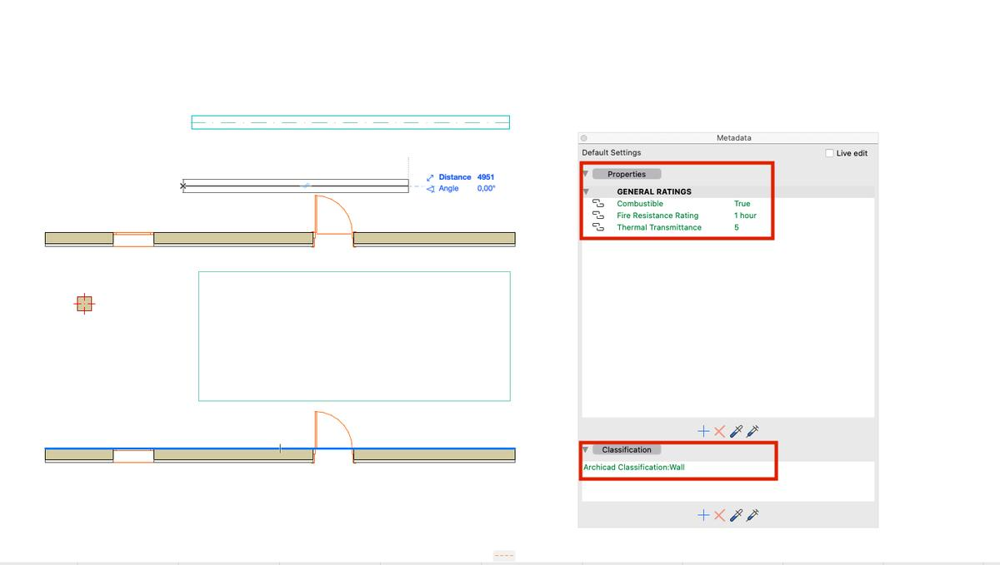
我们可以看到分类和属性都变成了绿色，说明它们正在被填充到构件中。
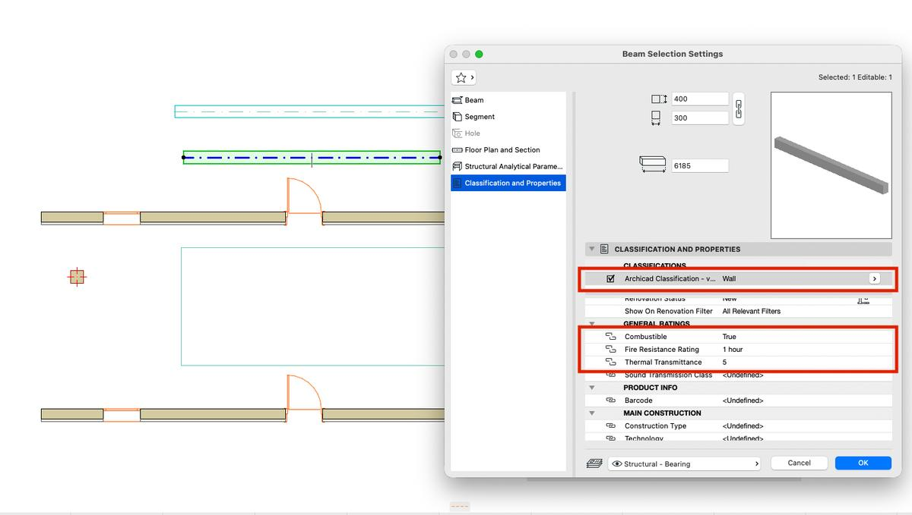
可以看到分类和属性已被填充到这个新构件中。
The Metadata Tool can also be used to populate properties as Elements are created in Archicad.
We will us the “+” button to add Properties hat we want n our selection ‘basket’ to populate as we draw new Elements. We will add Thermal Transmittance in this example.
Click on Choose to make this part of our Selection.
We can define this value in the Palette as previously.
We set this to 5.
Any Element created with these settings can be automatically populated into an element by switching on the Properties button in the palette.
We will now draw a Beam as an Example, we wwill see the Properies turn green that are being imported into the Element as we draw.
We will see the Properties have been transferred into the Beam.
In the same way it is possible to control the Classifications of newly created Elements.
Lets add a Classification to the Metadata Palette. We will add it once again with the “+” sign.
We can then choose any Classification from the loaded Classification of the project.
Any new Elements created will automatically have this Classification irrespective of Element Type, and the Properties previously selected and adjusted.
We have to engage the Classification transfer by clicking on the Classifications button.
Let us draw another Beam.
We can see that the Classification and Properties have turned green, meaning they are no being populated into the Element.
As we can see the Classification and the properties have been populated into the new Element.
英文原文对照Official English Original
The Metadata Tool can also be used to populate properties as Elements are created in Archicad.
We will us the “+” button to add Properties hat we want n our selection ‘basket’ to populate as we draw new Elements. We will add Thermal Transmittance in this example.
Click on Choose to make this part of our Selection.
We can define this value in the Palette as previously.
We set this to 5.
Any Element created with these settings can be automatically populated into an element by switching on the Properties button in the palette.
We will now draw a Beam as an Example, we wwill see the Properies turn green that are being imported into the Element as we draw.
We will see the Properties have been transferred into the Beam.
In the same way it is possible to control the Classifications of newly created Elements.
Lets add a Classification to the Metadata Palette. We will add it once again with the “+” sign.
We can then choose any Classification from the loaded Classification of the project.
Any new Elements created will automatically have this Classification irrespective of Element Type, and the Properties previously selected and adjusted.
We have to engage the Classification transfer by clicking on the Classifications button.
Let us draw another Beam.
We can see that the Classification and Properties have turned green, meaning they are no being populated into the Element.
As we can see the Classification and the properties have been populated into the new Element.
Metadata 工具能做什么？
What does the Metadata tool do?
Metadata 工具提供了对 Archicad 中属性的强大控制能力。
Metadata 面板的启动入口位于 CI Tools>Metadata>Show Metadata palette（显示 Metadata 面板）。
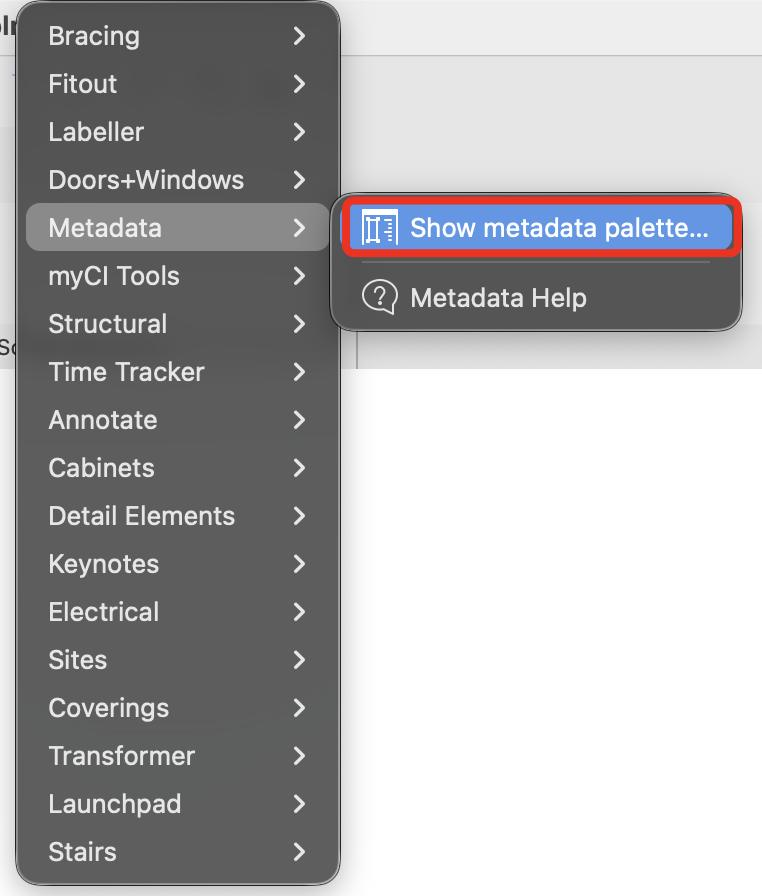
这会弹出用于处理 Archicad 中构件的面板。
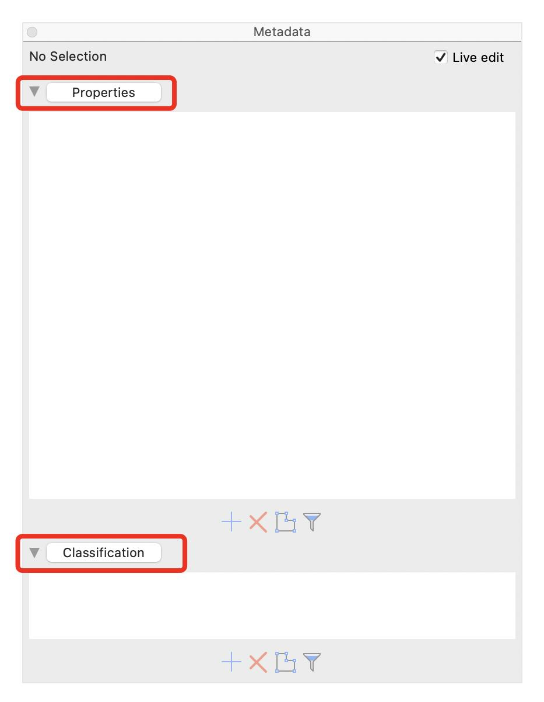
该面板主要让你能同时编辑多个构件的属性和分类。这与 Archicad 的 Find & Select（查找并选择）不同——后者编辑多个构件时只会编辑所选中某一种构件类型的属性。
我们来看一些示例：
我们在开启 Live Edit 开关的情况下同时选中一道墙和一块楼板。
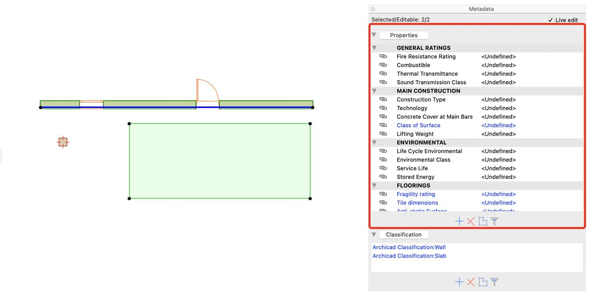
面板中会填充所有构件的属性；显示为黑色的属性
在所有选中构件的属性中都存在，而显示为蓝色的属性则不是所有构件都共有，或者在当前选择集中确实不同。
要编辑其中任何一项，只需点击属性左侧的 Custom Value（自定义值）按钮。
另一个重要特点是：如果我们选中了两个同类型构件，而某些属性不同——例如两面墙的可燃性取值不同——列表会以蓝色下拉形式同时给出两个值。它还会标明每个取值对应的选中项数量，本例中各为一个。
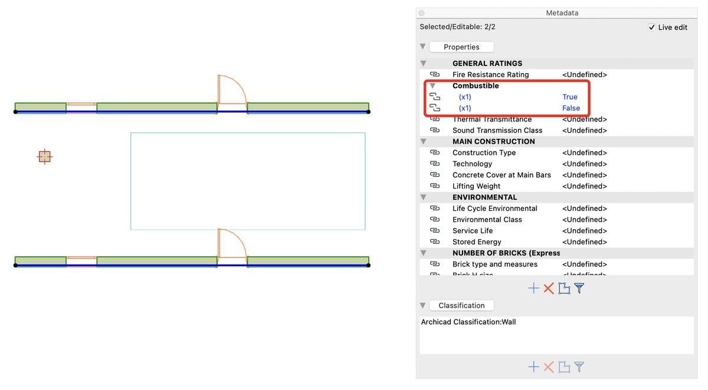
The Metadata tool offers powerful control over properties in Archicad.
The activation of the Metadata palette is under CI Tools>Metadata>Show Metadata palette.
This will bring up the palette for use with Elements in Archicad.
Primarily the palette allows you to edit Properties and Classifications across multiple Element simultaneously. This is different to Archicad Find & Select as editing multiple Elements will only edit the properties of one of the selected Element type.
Let us look at some examples:
We will select a wall and a slab simultaneously with the Live Edit toggle engaged.
The Properties will populate with all the Properties of the Elements, the properties in Black
exist across all the Properties of selected elements, while the ones in Blue do not exist across all Elements or are in fact different across the current selection.
To edit any of these we can simply click on the Custom Value button to the left of the Property.
Another important feature is that if we have two Elements selected of the same type and there are properties that are different, in this instance two walls with different values for combustibility the list will give us both values as a dropdown in blue. It will also indicate the number of selected items with each value, in this case one of each.
英文原文对照Official English Original
The Metadata tool offers powerful control over properties in Archicad.
The activation of the Metadata palette is under CI Tools>Metadata>Show Metadata palette.
This will bring up the palette for use with Elements in Archicad.
Primarily the palette allows you to edit Properties and Classifications across multiple Element simultaneously. This is different to Archicad Find & Select as editing multiple Elements will only edit the properties of one of the selected Element type.
Let us look at some examples:
We will select a wall and a slab simultaneously with the Live Edit toggle engaged.
The Properties will populate with all the Properties of the Elements, the properties in Black
exist across all the Properties of selected elements, while the ones in Blue do not exist across all Elements or are in fact different across the current selection.
To edit any of these we can simply click on the Custom Value button to the left of the Property.
Another important feature is that if we have two Elements selected of the same type and there are properties that are different, in this instance two walls with different values for combustibility the list will give us both values as a dropdown in blue. It will also indicate the number of selected items with each value, in this case one of each.